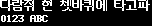

efontKR_12_b
efontKR · u8g2 · ko · 8319 chars

| flash | 225389 B |
| height | 12 |
| baseline | 10 |
| xAdvance | 24 |
| yAdvance | 12 |
| width | 24 |
| mono | True |
Unicode Blocks
| Basic Latin | 95 |
| Latin-1 Supplement | 31 |
| Latin Extended-A | 18 |
| Other BMP | 813 |
| General Punctuation | 13 |
| CJK Symbols and Punctuation | 17 |
| Hiragana | 83 |
| Katakana | 86 |
| Hangul Compatibility Jamo | 93 |
| CJK Unified Ideographs | 4620 |
| Hangul Syllables | 2350 |
| Halfwidth and Fullwidth Forms | 100 |
Copy Characters
Characters suitable for custom-font generation. Control characters are omitted.
Covered Characters
Use browser find to search this page. Control and space characters are shown as labels.
Basic Latin
[space]U+0020 !U+0021 "U+0022 #U+0023 $U+0024 %U+0025 &U+0026 'U+0027 (U+0028 )U+0029 *U+002A +U+002B ,U+002C -U+002D .U+002E /U+002F 0U+0030 1U+0031 2U+0032 3U+0033 4U+0034 5U+0035 6U+0036 7U+0037 8U+0038 9U+0039 :U+003A ;U+003B <U+003C =U+003D >U+003E ?U+003F @U+0040 AU+0041 BU+0042 CU+0043 DU+0044 EU+0045 FU+0046 GU+0047 HU+0048 IU+0049 JU+004A KU+004B LU+004C MU+004D NU+004E OU+004F PU+0050 QU+0051 RU+0052 SU+0053 TU+0054 UU+0055 VU+0056 WU+0057 XU+0058 YU+0059 ZU+005A [U+005B \U+005C ]U+005D ^U+005E _U+005F `U+0060 aU+0061 bU+0062 cU+0063 dU+0064 eU+0065 fU+0066 gU+0067 hU+0068 iU+0069 jU+006A kU+006B lU+006C mU+006D nU+006E oU+006F pU+0070 qU+0071 rU+0072 sU+0073 tU+0074 uU+0075 vU+0076 wU+0077 xU+0078 yU+0079 zU+007A {U+007B |U+007C }U+007D ~U+007E
Latin-1 Supplement
¡U+00A1 ¤U+00A4 §U+00A7 ¨U+00A8 ªU+00AA ®U+00AE °U+00B0 ±U+00B1 ²U+00B2 ³U+00B3 ´U+00B4 ¶U+00B6 ·U+00B7 ¸U+00B8 ¹U+00B9 ºU+00BA ¼U+00BC ½U+00BD ¾U+00BE ¿U+00BF ÆU+00C6 ÐU+00D0 ×U+00D7 ØU+00D8 ÞU+00DE ßU+00DF æU+00E6 ðU+00F0 ÷U+00F7 øU+00F8 þU+00FE
Latin Extended-A
đU+0111 ĦU+0126 ħU+0127 ıU+0131 IJU+0132 ijU+0133 ĸU+0138 ĿU+013F ŀU+0140 ŁU+0141 łU+0142 ʼnU+0149 ŊU+014A ŋU+014B ŒU+0152 œU+0153 ŦU+0166 ŧU+0167
Other BMP
ˇU+02C7 ːU+02D0 ˘U+02D8 ˙U+02D9 ˚U+02DA ˛U+02DB ˝U+02DD ΑU+0391 ΒU+0392 ΓU+0393 ΔU+0394 ΕU+0395 ΖU+0396 ΗU+0397 ΘU+0398 ΙU+0399 ΚU+039A ΛU+039B ΜU+039C ΝU+039D ΞU+039E ΟU+039F ΠU+03A0 ΡU+03A1 ΣU+03A3 ΤU+03A4 ΥU+03A5 ΦU+03A6 ΧU+03A7 ΨU+03A8 ΩU+03A9 αU+03B1 βU+03B2 γU+03B3 δU+03B4 εU+03B5 ζU+03B6 ηU+03B7 θU+03B8 ιU+03B9 κU+03BA λU+03BB μU+03BC νU+03BD ξU+03BE οU+03BF πU+03C0 ρU+03C1 σU+03C3 τU+03C4 υU+03C5 φU+03C6 χU+03C7 ψU+03C8 ωU+03C9 ЁU+0401 АU+0410 БU+0411 ВU+0412 ГU+0413 ДU+0414 ЕU+0415 ЖU+0416 ЗU+0417 ИU+0418 ЙU+0419 КU+041A ЛU+041B МU+041C НU+041D ОU+041E ПU+041F РU+0420 СU+0421 ТU+0422 УU+0423 ФU+0424 ХU+0425 ЦU+0426 ЧU+0427 ШU+0428 ЩU+0429 ЪU+042A ЫU+042B ЬU+042C ЭU+042D ЮU+042E ЯU+042F аU+0430 бU+0431 вU+0432 гU+0433 дU+0434 еU+0435 жU+0436 зU+0437 иU+0438 йU+0439 кU+043A лU+043B мU+043C нU+043D оU+043E пU+043F рU+0440 сU+0441 тU+0442 уU+0443 фU+0444 хU+0445 цU+0446 чU+0447 шU+0448 щU+0449 ъU+044A ыU+044B ьU+044C эU+044D юU+044E яU+044F ёU+0451 ⁴U+2074 ⁿU+207F ₁U+2081 ₂U+2082 ₃U+2083 ₄U+2084 €U+20AC ℃U+2103 ℉U+2109 ℓU+2113 №U+2116 ℡U+2121 ™U+2122 ΩU+2126 ÅU+212B ⅓U+2153 ⅔U+2154 ⅛U+215B ⅜U+215C ⅝U+215D ⅞U+215E ⅠU+2160 ⅡU+2161 ⅢU+2162 ⅣU+2163 ⅤU+2164 ⅥU+2165 ⅦU+2166 ⅧU+2167 ⅨU+2168 ⅩU+2169 ⅰU+2170 ⅱU+2171 ⅲU+2172 ⅳU+2173 ⅴU+2174 ⅵU+2175 ⅶU+2176 ⅷU+2177 ⅸU+2178 ⅹU+2179 ←U+2190 ↑U+2191 →U+2192 ↓U+2193 ↔U+2194 ↕U+2195 ↖U+2196 ↗U+2197 ↘U+2198 ↙U+2199 ⇒U+21D2 ⇔U+21D4 ∀U+2200 ∂U+2202 ∃U+2203 ∇U+2207 ∈U+2208 ∋U+220B ∏U+220F ∑U+2211 √U+221A ∝U+221D ∞U+221E ∠U+2220 ∥U+2225 ∧U+2227 ∨U+2228 ∩U+2229 ∪U+222A ∫U+222B ∬U+222C ∮U+222E ∴U+2234 ∵U+2235 ∼U+223C ∽U+223D ≒U+2252 ≠U+2260 ≡U+2261 ≤U+2264 ≥U+2265 ≪U+226A ≫U+226B ⊂U+2282 ⊃U+2283 ⊆U+2286 ⊇U+2287 ⊙U+2299 ⊥U+22A5 ⌒U+2312 ①U+2460 ②U+2461 ③U+2462 ④U+2463 ⑤U+2464 ⑥U+2465 ⑦U+2466 ⑧U+2467 ⑨U+2468 ⑩U+2469 ⑪U+246A ⑫U+246B ⑬U+246C ⑭U+246D ⑮U+246E ⑴U+2474 ⑵U+2475 ⑶U+2476 ⑷U+2477 ⑸U+2478 ⑹U+2479 ⑺U+247A ⑻U+247B ⑼U+247C ⑽U+247D ⑾U+247E ⑿U+247F ⒀U+2480 ⒁U+2481 ⒂U+2482 ⒜U+249C ⒝U+249D ⒞U+249E ⒟U+249F ⒠U+24A0 ⒡U+24A1 ⒢U+24A2 ⒣U+24A3 ⒤U+24A4 ⒥U+24A5 ⒦U+24A6 ⒧U+24A7 ⒨U+24A8 ⒩U+24A9 ⒪U+24AA ⒫U+24AB ⒬U+24AC ⒭U+24AD ⒮U+24AE ⒯U+24AF ⒰U+24B0 ⒱U+24B1 ⒲U+24B2 ⒳U+24B3 ⒴U+24B4 ⒵U+24B5 ⓐU+24D0 ⓑU+24D1 ⓒU+24D2 ⓓU+24D3 ⓔU+24D4 ⓕU+24D5 ⓖU+24D6 ⓗU+24D7 ⓘU+24D8 ⓙU+24D9 ⓚU+24DA ⓛU+24DB ⓜU+24DC ⓝU+24DD ⓞU+24DE ⓟU+24DF ⓠU+24E0 ⓡU+24E1 ⓢU+24E2 ⓣU+24E3 ⓤU+24E4 ⓥU+24E5 ⓦU+24E6 ⓧU+24E7 ⓨU+24E8 ⓩU+24E9 ─U+2500 ━U+2501 │U+2502 ┃U+2503 ┌U+250C ┍U+250D ┎U+250E ┏U+250F ┐U+2510 ┑U+2511 ┒U+2512 ┓U+2513 └U+2514 ┕U+2515 ┖U+2516 ┗U+2517 ┘U+2518 ┙U+2519 ┚U+251A ┛U+251B ├U+251C ┝U+251D ┞U+251E ┟U+251F ┠U+2520 ┡U+2521 ┢U+2522 ┣U+2523 ┤U+2524 ┥U+2525 ┦U+2526 ┧U+2527 ┨U+2528 ┩U+2529 ┪U+252A ┫U+252B ┬U+252C ┭U+252D ┮U+252E ┯U+252F ┰U+2530 ┱U+2531 ┲U+2532 ┳U+2533 ┴U+2534 ┵U+2535 ┶U+2536 ┷U+2537 ┸U+2538 ┹U+2539 ┺U+253A ┻U+253B ┼U+253C ┽U+253D ┾U+253E ┿U+253F ╀U+2540 ╁U+2541 ╂U+2542 ╃U+2543 ╄U+2544 ╅U+2545 ╆U+2546 ╇U+2547 ╈U+2548 ╉U+2549 ╊U+254A ╋U+254B ▒U+2592 ■U+25A0 □U+25A1 ▣U+25A3 ▤U+25A4 ▥U+25A5 ▦U+25A6 ▧U+25A7 ▨U+25A8 ▩U+25A9 ▲U+25B2 △U+25B3 ▶U+25B6 ▷U+25B7 ▼U+25BC ▽U+25BD ◀U+25C0 ◁U+25C1 ◆U+25C6 ◇U+25C7 ◈U+25C8 ○U+25CB ◎U+25CE ●U+25CF ◐U+25D0 ◑U+25D1 ★U+2605 ☆U+2606 ☎U+260E ☏U+260F ☜U+261C ☞U+261E ♀U+2640 ♂U+2642 ♠U+2660 ♡U+2661 ♣U+2663 ♤U+2664 ♥U+2665 ♧U+2667 ♨U+2668 ♩U+2669 ♪U+266A ♬U+266C ♭U+266D ㈀U+3200 ㈁U+3201 ㈂U+3202 ㈃U+3203 ㈄U+3204 ㈅U+3205 ㈆U+3206 ㈇U+3207 ㈈U+3208 ㈉U+3209 ㈊U+320A ㈋U+320B ㈌U+320C ㈍U+320D ㈎U+320E ㈏U+320F ㈐U+3210 ㈑U+3211 ㈒U+3212 ㈓U+3213 ㈔U+3214 ㈕U+3215 ㈖U+3216 ㈗U+3217 ㈘U+3218 ㈙U+3219 ㈚U+321A ㈛U+321B ㈜U+321C ㉠U+3260 ㉡U+3261 ㉢U+3262 ㉣U+3263 ㉤U+3264 ㉥U+3265 ㉦U+3266 ㉧U+3267 ㉨U+3268 ㉩U+3269 ㉪U+326A ㉫U+326B ㉬U+326C ㉭U+326D ㉮U+326E ㉯U+326F ㉰U+3270 ㉱U+3271 ㉲U+3272 ㉳U+3273 ㉴U+3274 ㉵U+3275 ㉶U+3276 ㉷U+3277 ㉸U+3278 ㉹U+3279 ㉺U+327A ㉻U+327B ㉿U+327F ㎀U+3380 ㎁U+3381 ㎂U+3382 ㎃U+3383 ㎄U+3384 ㎈U+3388 ㎉U+3389 ㎊U+338A ㎋U+338B ㎌U+338C ㎍U+338D ㎎U+338E ㎏U+338F ㎐U+3390 ㎑U+3391 ㎒U+3392 ㎓U+3393 ㎔U+3394 ㎕U+3395 ㎖U+3396 ㎗U+3397 ㎘U+3398 ㎙U+3399 ㎚U+339A ㎛U+339B ㎜U+339C ㎝U+339D ㎞U+339E ㎟U+339F ㎠U+33A0 ㎡U+33A1 ㎢U+33A2 ㎣U+33A3 ㎤U+33A4 ㎥U+33A5 ㎦U+33A6 ㎧U+33A7 ㎨U+33A8 ㎩U+33A9 ㎪U+33AA ㎫U+33AB ㎬U+33AC ㎭U+33AD ㎮U+33AE ㎯U+33AF ㎰U+33B0 ㎱U+33B1 ㎲U+33B2 ㎳U+33B3 ㎴U+33B4 ㎵U+33B5 ㎶U+33B6 ㎷U+33B7 ㎸U+33B8 ㎹U+33B9 ㎺U+33BA ㎻U+33BB ㎼U+33BC ㎽U+33BD ㎾U+33BE ㎿U+33BF ㏀U+33C0 ㏁U+33C1 ㏂U+33C2 ㏃U+33C3 ㏄U+33C4 ㏅U+33C5 ㏆U+33C6 ㏇U+33C7 ㏈U+33C8 ㏉U+33C9 ㏊U+33CA ㏏U+33CF ㏐U+33D0 ㏓U+33D3 ㏖U+33D6 ㏘U+33D8 ㏛U+33DB ㏜U+33DC ㏝U+33DD 豈U+F900 更U+F901 車U+F902 賈U+F903 滑U+F904 串U+F905 句U+F906 龜U+F907 龜U+F908 契U+F909 金U+F90A 喇U+F90B 奈U+F90C 懶U+F90D 癩U+F90E 羅U+F90F 蘿U+F910 螺U+F911 裸U+F912 邏U+F913 樂U+F914 洛U+F915 烙U+F916 珞U+F917 落U+F918 酪U+F919 駱U+F91A 亂U+F91B 卵U+F91C 欄U+F91D 爛U+F91E 蘭U+F91F 鸞U+F920 嵐U+F921 濫U+F922 藍U+F923 襤U+F924 拉U+F925 臘U+F926 蠟U+F927 廊U+F928 朗U+F929 浪U+F92A 狼U+F92B 郎U+F92C 來U+F92D 冷U+F92E 勞U+F92F 擄U+F930 櫓U+F931 爐U+F932 盧U+F933 老U+F934 蘆U+F935 虜U+F936 路U+F937 露U+F938 魯U+F939 鷺U+F93A 碌U+F93B 祿U+F93C 綠U+F93D 菉U+F93E 錄U+F93F 鹿U+F940 論U+F941 壟U+F942 弄U+F943 籠U+F944 聾U+F945 牢U+F946 磊U+F947 賂U+F948 雷U+F949 壘U+F94A 屢U+F94B 樓U+F94C 淚U+F94D 漏U+F94E 累U+F94F 縷U+F950 陋U+F951 勒U+F952 肋U+F953 凜U+F954 凌U+F955 稜U+F956 綾U+F957 菱U+F958 陵U+F959 讀U+F95A 拏U+F95B 樂U+F95C 諾U+F95D 丹U+F95E 寧U+F95F 怒U+F960 率U+F961 異U+F962 北U+F963 磻U+F964 便U+F965 復U+F966 不U+F967 泌U+F968 數U+F969 索U+F96A 參U+F96B 塞U+F96C 省U+F96D 葉U+F96E 說U+F96F 殺U+F970 辰U+F971 沈U+F972 拾U+F973 若U+F974 掠U+F975 略U+F976 亮U+F977 兩U+F978 凉U+F979 梁U+F97A 糧U+F97B 良U+F97C 諒U+F97D 量U+F97E 勵U+F97F 呂U+F980 女U+F981 廬U+F982 旅U+F983 濾U+F984 礪U+F985 閭U+F986 驪U+F987 麗U+F988 黎U+F989 力U+F98A 曆U+F98B 歷U+F98C 轢U+F98D 年U+F98E 憐U+F98F 戀U+F990 撚U+F991 漣U+F992 煉U+F993 璉U+F994 秊U+F995 練U+F996 聯U+F997 輦U+F998 蓮U+F999 連U+F99A 鍊U+F99B 列U+F99C 劣U+F99D 咽U+F99E 烈U+F99F 裂U+F9A0 說U+F9A1 廉U+F9A2 念U+F9A3 捻U+F9A4 殮U+F9A5 簾U+F9A6 獵U+F9A7 令U+F9A8 囹U+F9A9 寧U+F9AA 嶺U+F9AB 怜U+F9AC 玲U+F9AD 瑩U+F9AE 羚U+F9AF 聆U+F9B0 鈴U+F9B1 零U+F9B2 靈U+F9B3 領U+F9B4 例U+F9B5 禮U+F9B6 醴U+F9B7 隸U+F9B8 惡U+F9B9 了U+F9BA 僚U+F9BB 寮U+F9BC 尿U+F9BD 料U+F9BE 樂U+F9BF 燎U+F9C0 療U+F9C1 蓼U+F9C2 遼U+F9C3 龍U+F9C4 暈U+F9C5 阮U+F9C6 劉U+F9C7 杻U+F9C8 柳U+F9C9 流U+F9CA 溜U+F9CB 琉U+F9CC 留U+F9CD 硫U+F9CE 紐U+F9CF 類U+F9D0 六U+F9D1 戮U+F9D2 陸U+F9D3 倫U+F9D4 崙U+F9D5 淪U+F9D6 輪U+F9D7 律U+F9D8 慄U+F9D9 栗U+F9DA 率U+F9DB 隆U+F9DC 利U+F9DD 吏U+F9DE 履U+F9DF 易U+F9E0 李U+F9E1 梨U+F9E2 泥U+F9E3 理U+F9E4 痢U+F9E5 罹U+F9E6 裏U+F9E7 裡U+F9E8 里U+F9E9 離U+F9EA 匿U+F9EB 溺U+F9EC 吝U+F9ED 燐U+F9EE 璘U+F9EF 藺U+F9F0 隣U+F9F1 鱗U+F9F2 麟U+F9F3 林U+F9F4 淋U+F9F5 臨U+F9F6 立U+F9F7 笠U+F9F8 粒U+F9F9 狀U+F9FA 炙U+F9FB 識U+F9FC 什U+F9FD 茶U+F9FE 刺U+F9FF 切U+FA00 度U+FA01 拓U+FA02 糖U+FA03 宅U+FA04 洞U+FA05 暴U+FA06 輻U+FA07 行U+FA08 降U+FA09 見U+FA0A 廓U+FA0B
General Punctuation
―U+2015 ‘U+2018 ’U+2019 “U+201C ”U+201D †U+2020 ‡U+2021 ‥U+2025 …U+2026 ‰U+2030 ′U+2032 ″U+2033 ※U+203B
CJK Symbols and Punctuation
[ideographic space]U+3000 、U+3001 。U+3002 〃U+3003 〈U+3008 〉U+3009 《U+300A 》U+300B 「U+300C 」U+300D 『U+300E 』U+300F 【U+3010 】U+3011 〓U+3013 〔U+3014 〕U+3015
Hiragana
ぁU+3041 あU+3042 ぃU+3043 いU+3044 ぅU+3045 うU+3046 ぇU+3047 えU+3048 ぉU+3049 おU+304A かU+304B がU+304C きU+304D ぎU+304E くU+304F ぐU+3050 けU+3051 げU+3052 こU+3053 ごU+3054 さU+3055 ざU+3056 しU+3057 じU+3058 すU+3059 ずU+305A せU+305B ぜU+305C そU+305D ぞU+305E たU+305F だU+3060 ちU+3061 ぢU+3062 っU+3063 つU+3064 づU+3065 てU+3066 でU+3067 とU+3068 どU+3069 なU+306A にU+306B ぬU+306C ねU+306D のU+306E はU+306F ばU+3070 ぱU+3071 ひU+3072 びU+3073 ぴU+3074 ふU+3075 ぶU+3076 ぷU+3077 へU+3078 べU+3079 ぺU+307A ほU+307B ぼU+307C ぽU+307D まU+307E みU+307F むU+3080 めU+3081 もU+3082 ゃU+3083 やU+3084 ゅU+3085 ゆU+3086 ょU+3087 よU+3088 らU+3089 りU+308A るU+308B れU+308C ろU+308D ゎU+308E わU+308F ゐU+3090 ゑU+3091 をU+3092 んU+3093
Katakana
ァU+30A1 アU+30A2 ィU+30A3 イU+30A4 ゥU+30A5 ウU+30A6 ェU+30A7 エU+30A8 ォU+30A9 オU+30AA カU+30AB ガU+30AC キU+30AD ギU+30AE クU+30AF グU+30B0 ケU+30B1 ゲU+30B2 コU+30B3 ゴU+30B4 サU+30B5 ザU+30B6 シU+30B7 ジU+30B8 スU+30B9 ズU+30BA セU+30BB ゼU+30BC ソU+30BD ゾU+30BE タU+30BF ダU+30C0 チU+30C1 ヂU+30C2 ッU+30C3 ツU+30C4 ヅU+30C5 テU+30C6 デU+30C7 トU+30C8 ドU+30C9 ナU+30CA ニU+30CB ヌU+30CC ネU+30CD ノU+30CE ハU+30CF バU+30D0 パU+30D1 ヒU+30D2 ビU+30D3 ピU+30D4 フU+30D5 ブU+30D6 プU+30D7 ヘU+30D8 ベU+30D9 ペU+30DA ホU+30DB ボU+30DC ポU+30DD マU+30DE ミU+30DF ムU+30E0 メU+30E1 モU+30E2 ャU+30E3 ヤU+30E4 ュU+30E5 ユU+30E6 ョU+30E7 ヨU+30E8 ラU+30E9 リU+30EA ルU+30EB レU+30EC ロU+30ED ヮU+30EE ワU+30EF ヰU+30F0 ヱU+30F1 ヲU+30F2 ンU+30F3 ヴU+30F4 ヵU+30F5 ヶU+30F6
Hangul Compatibility Jamo
ㄱU+3131 ㄲU+3132 ㄳU+3133 ㄴU+3134 ㄵU+3135 ㄶU+3136 ㄷU+3137 ㄸU+3138 ㄹU+3139 ㄺU+313A ㄻU+313B ㄼU+313C ㄽU+313D ㄾU+313E ㄿU+313F ㅀU+3140 ㅁU+3141 ㅂU+3142 ㅃU+3143 ㅄU+3144 ㅅU+3145 ㅆU+3146 ㅇU+3147 ㅈU+3148 ㅉU+3149 ㅊU+314A ㅋU+314B ㅌU+314C ㅍU+314D ㅎU+314E ㅏU+314F ㅐU+3150 ㅑU+3151 ㅒU+3152 ㅓU+3153 ㅔU+3154 ㅕU+3155 ㅖU+3156 ㅗU+3157 ㅘU+3158 ㅙU+3159 ㅚU+315A ㅛU+315B ㅜU+315C ㅝU+315D ㅞU+315E ㅟU+315F ㅠU+3160 ㅡU+3161 ㅢU+3162 ㅣU+3163 ㅥU+3165 ㅦU+3166 ㅧU+3167 ㅨU+3168 ㅩU+3169 ㅪU+316A ㅫU+316B ㅬU+316C ㅭU+316D ㅮU+316E ㅯU+316F ㅰU+3170 ㅱU+3171 ㅲU+3172 ㅳU+3173 ㅴU+3174 ㅵU+3175 ㅶU+3176 ㅷU+3177 ㅸU+3178 ㅹU+3179 ㅺU+317A ㅻU+317B ㅼU+317C ㅽU+317D ㅾU+317E ㅿU+317F ㆀU+3180 ㆁU+3181 ㆂU+3182 ㆃU+3183 ㆄU+3184 ㆅU+3185 ㆆU+3186 ㆇU+3187 ㆈU+3188 ㆉU+3189 ㆊU+318A ㆋU+318B ㆌU+318C ㆍU+318D ㆎU+318E
CJK Unified Ideographs
一U+4E00 丁U+4E01 七U+4E03 万U+4E07 丈U+4E08 三U+4E09 上U+4E0A 下U+4E0B 不U+4E0D 丑U+4E11 且U+4E14 丕U+4E15 世U+4E16 丘U+4E18 丙U+4E19 丞U+4E1E 中U+4E2D 串U+4E32 丸U+4E38 丹U+4E39 主U+4E3B 乂U+4E42 乃U+4E43 久U+4E45 之U+4E4B 乍U+4E4D 乎U+4E4E 乏U+4E4F 乖U+4E56 乘U+4E58 乙U+4E59 九U+4E5D 乞U+4E5E 也U+4E5F 乫U+4E6B 乭U+4E6D 乳U+4E73 乶U+4E76 乷U+4E77 乾U+4E7E 亂U+4E82 了U+4E86 予U+4E88 事U+4E8B 二U+4E8C 于U+4E8E 亐U+4E90 云U+4E91 互U+4E92 五U+4E94 井U+4E95 亘U+4E98 些U+4E9B 亞U+4E9E 亡U+4EA1 亢U+4EA2 交U+4EA4 亥U+4EA5 亦U+4EA6 亨U+4EA8 享U+4EAB 京U+4EAC 亭U+4EAD 亮U+4EAE 亶U+4EB6 人U+4EBA 什U+4EC0 仁U+4EC1 仄U+4EC4 仇U+4EC7 今U+4ECA 介U+4ECB 仍U+4ECD 仔U+4ED4 仕U+4ED5 他U+4ED6 仗U+4ED7 付U+4ED8 仙U+4ED9 仝U+4EDD 仟U+4EDF 代U+4EE3 令U+4EE4 以U+4EE5 仰U+4EF0 仲U+4EF2 件U+4EF6 价U+4EF7 任U+4EFB 企U+4F01 伉U+4F09 伊U+4F0A 伋U+4F0B 伍U+4F0D 伎U+4F0E 伏U+4F0F 伐U+4F10 休U+4F11 伯U+4F2F 伴U+4F34 伶U+4F36 伸U+4F38 伺U+4F3A 似U+4F3C 伽U+4F3D 佃U+4F43 但U+4F46 佇U+4F47 佈U+4F48 位U+4F4D 低U+4F4E 住U+4F4F 佐U+4F50 佑U+4F51 何U+4F55 余U+4F59 佚U+4F5A 佛U+4F5B 作U+4F5C 佩U+4F69 佯U+4F6F 佰U+4F70 佳U+4F73 佶U+4F76 佺U+4F7A 佾U+4F7E 使U+4F7F 侁U+4F81 侃U+4F83 侄U+4F84 來U+4F86 侈U+4F88 侊U+4F8A 例U+4F8B 侍U+4F8D 侏U+4F8F 侑U+4F91 侖U+4F96 侘U+4F98 供U+4F9B 依U+4F9D 侮U+4FAE 侯U+4FAF 侵U+4FB5 侶U+4FB6 便U+4FBF 係U+4FC2 促U+4FC3 俄U+4FC4 俉U+4FC9 俊U+4FCA 俎U+4FCE 俑U+4FD1 俓U+4FD3 俔U+4FD4 俗U+4FD7 俚U+4FDA 保U+4FDD 俟U+4FDF 俠U+4FE0 信U+4FE1 修U+4FEE 俯U+4FEF 俱U+4FF1 俳U+4FF3 俵U+4FF5 俸U+4FF8 俺U+4FFA 倂U+5002 倆U+5006 倉U+5009 個U+500B 倍U+500D 們U+5011 倒U+5012 倖U+5016 候U+5019 倚U+501A 倜U+501C 倞U+501E 借U+501F 倡U+5021 倣U+5023 値U+5024 倦U+5026 倧U+5027 倨U+5028 倪U+502A 倫U+502B 倬U+502C 倭U+502D 倻U+503B 偃U+5043 假U+5047 偈U+5048 偉U+5049 偏U+504F 偕U+5055 做U+505A 停U+505C 健U+5065 側U+5074 偵U+5075 偶U+5076 偸U+5078 傀U+5080 傅U+5085 傍U+508D 傑U+5091 傘U+5098 備U+5099 催U+50AC 傭U+50AD 傲U+50B2 傳U+50B3 債U+50B5 傷U+50B7 傾U+50BE 僅U+50C5 僉U+50C9 僊U+50CA 像U+50CF 僑U+50D1 僕U+50D5 僖U+50D6 僚U+50DA 僞U+50DE 僥U+50E5 僧U+50E7 僭U+50ED 價U+50F9 僻U+50FB 僿U+50FF 儀U+5100 儁U+5101 億U+5104 儆U+5106 儉U+5109 儒U+5112 償U+511F 儡U+5121 優U+512A 儲U+5132 儷U+5137 儺U+513A 儼U+513C 兀U+5140 允U+5141 元U+5143 兄U+5144 充U+5145 兆U+5146 兇U+5147 先U+5148 光U+5149 克U+514B 兌U+514C 免U+514D 兎U+514E 兒U+5152 兜U+515C 兢U+5162 入U+5165 內U+5167 全U+5168 兩U+5169 兪U+516A 八U+516B 公U+516C 六U+516D 兮U+516E 共U+5171 兵U+5175 其U+5176 具U+5177 典U+5178 兼U+517C 冀U+5180 円U+5186 冊U+518A 再U+518D 冒U+5192 冕U+5195 冗U+5197 冠U+51A0 冥U+51A5 冪U+51AA 冬U+51AC 冶U+51B6 冷U+51B7 冽U+51BD 凄U+51C4 准U+51C6 凉U+51C9 凋U+51CB 凌U+51CC 凍U+51CD 凜U+51DC 凝U+51DD 凞U+51DE 凡U+51E1 凰U+51F0 凱U+51F1 凶U+51F6 凸U+51F8 凹U+51F9 出U+51FA 函U+51FD 刀U+5200 刃U+5203 分U+5206 切U+5207 刈U+5208 刊U+520A 刎U+520E 刑U+5211 列U+5217 初U+521D 判U+5224 別U+5225 利U+5229 刪U+522A 刮U+522E 到U+5230 制U+5236 刷U+5237 券U+5238 刹U+5239 刺U+523A 刻U+523B 剃U+5243 則U+5247 削U+524A 剋U+524B 剌U+524C 前U+524D 剔U+5254 剖U+5256 剛U+525B 剝U+525D 剡U+5261 剩U+5269 剪U+526A 副U+526F 割U+5272 創U+5275 剽U+527D 剿U+527F 劃U+5283 劇U+5287 劈U+5288 劉U+5289 劍U+528D 劑U+5291 劒U+5292 力U+529B 功U+529F 加U+52A0 劣U+52A3 劤U+52A4 助U+52A9 努U+52AA 劫U+52AB 劾U+52BE 勁U+52C1 勃U+52C3 勅U+52C5 勇U+52C7 勉U+52C9 勍U+52CD 勒U+52D2 動U+52D5 勖U+52D6 勘U+52D8 務U+52D9 勛U+52DB 勝U+52DD 勞U+52DE 募U+52DF 勢U+52E2 勣U+52E3 勤U+52E4 勳U+52F3 勵U+52F5 勸U+52F8 勺U+52FA 勻U+52FB 勾U+52FE 勿U+52FF 包U+5305 匈U+5308 匍U+530D 匏U+530F 匐U+5310 匕U+5315 化U+5316 北U+5317 匙U+5319 匠U+5320 匡U+5321 匣U+5323 匪U+532A 匯U+532F 匹U+5339 匿U+533F 區U+5340 十U+5341 千U+5343 卄U+5344 升U+5347 午U+5348 卉U+5349 半U+534A 卍U+534D 卑U+5351 卒U+5352 卓U+5353 協U+5354 南U+5357 博U+535A 卜U+535C 卞U+535E 占U+5360 卦U+5366 卨U+5368 卯U+536F 印U+5370 危U+5371 却U+5374 卵U+5375 卷U+5377 卽U+537D 卿U+537F 厄U+5384 厓U+5393 厘U+5398 厚U+539A 原U+539F 厠U+53A0 厥U+53A5 厦U+53A6 厭U+53AD 去U+53BB 參U+53C3 又U+53C8 叉U+53C9 及U+53CA 友U+53CB 反U+53CD 叔U+53D4 取U+53D6 受U+53D7 叛U+53DB 叡U+53E1 叢U+53E2 口U+53E3 古U+53E4 句U+53E5 叩U+53E9 只U+53EA 叫U+53EB 召U+53EC 叭U+53ED 可U+53EF 台U+53F0 叱U+53F1 史U+53F2 右U+53F3 司U+53F8 吃U+5403 各U+5404 合U+5408 吉U+5409 吊U+540A 同U+540C 名U+540D 后U+540E 吏U+540F 吐U+5410 向U+5411 君U+541B 吝U+541D 吟U+541F 吠U+5420 否U+5426 吩U+5429 含U+542B 吳U+5433 吸U+5438 吹U+5439 吻U+543B 吼U+543C 吾U+543E 呂U+5442 呈U+5448 告U+544A 呑U+5451 周U+5468 呪U+546A 呱U+5471 味U+5473 呵U+5475 呻U+547B 呼U+547C 命U+547D 咀U+5480 咆U+5486 和U+548C 咎U+548E 咐U+5490 咤U+54A4 咨U+54A8 咫U+54AB 咬U+54AC 咳U+54B3 咸U+54B8 咽U+54BD 哀U+54C0 品U+54C1 哄U+54C4 哈U+54C8 哉U+54C9 員U+54E1 哥U+54E5 哨U+54E8 哭U+54ED 哮U+54EE 哲U+54F2 哺U+54FA 唄U+5504 唆U+5506 唇U+5507 唎U+550E 唐U+5510 唜U+551C 唯U+552F 唱U+5531 唵U+5535 唾U+553E 啄U+5544 商U+5546 問U+554F 啓U+5553 啖U+5556 啞U+555E 啣U+5563 啼U+557C 喀U+5580 善U+5584 喆U+5586 喇U+5587 喉U+5589 喊U+558A 喘U+5598 喙U+5599 喚U+559A 喜U+559C 喝U+559D 喧U+55A7 喩U+55A9 喪U+55AA 喫U+55AB 喬U+55AC 單U+55AE 嗅U+55C5 嗇U+55C7 嗔U+55D4 嗚U+55DA 嗜U+55DC 嗟U+55DF 嗣U+55E3 嗤U+55E4 嗽U+55FD 嗾U+55FE 嘆U+5606 嘉U+5609 嘔U+5614 嘗U+5617 嘯U+562F 嘲U+5632 嘴U+5634 嘶U+5636 噓U+5653 器U+5668 噫U+566B 噴U+5674 嚆U+5686 嚥U+56A5 嚬U+56AC 嚮U+56AE 嚴U+56B4 嚼U+56BC 囊U+56CA 囍U+56CD 囑U+56D1 囚U+56DA 四U+56DB 回U+56DE 因U+56E0 困U+56F0 囹U+56F9 固U+56FA 圃U+5703 圄U+5704 圈U+5708 國U+570B 圍U+570D 園U+5712 圓U+5713 圖U+5716 團U+5718 土U+571F 在U+5728 圭U+572D 地U+5730 圻U+573B 址U+5740 坂U+5742 均U+5747 坊U+574A 坍U+574D 坎U+574E 坐U+5750 坑U+5751 坡U+5761 坤U+5764 坦U+5766 坪U+576A 坮U+576E 坰U+5770 坵U+5775 坼U+577C 垂U+5782 垈U+5788 型U+578B 垓U+5793 垠U+57A0 垢U+57A2 垣U+57A3 埃U+57C3 埇U+57C7 埈U+57C8 埋U+57CB 城U+57CE 域U+57DF 埠U+57E0 埰U+57F0 埴U+57F4 執U+57F7 培U+57F9 基U+57FA 埼U+57FC 堀U+5800 堂U+5802 堅U+5805 堆U+5806 堈U+5808 堉U+5809 堊U+580A 堞U+581E 堡U+5821 堤U+5824 堧U+5827 堪U+582A 堯U+582F 堰U+5830 報U+5831 場U+5834 堵U+5835 堺U+583A 塊U+584A 塋U+584B 塏U+584F 塑U+5851 塔U+5854 塗U+5857 塘U+5858 塚U+585A 塞U+585E 塡U+5861 塢U+5862 塤U+5864 塵U+5875 塹U+5879 塼U+587C 塾U+587E 境U+5883 墅U+5885 墉U+5889 墓U+5893 墜U+589C 增U+589E 墟U+589F 墨U+58A8 墩U+58A9 墮U+58AE 墳U+58B3 墺U+58BA 墻U+58BB 墾U+58BE 壁U+58C1 壅U+58C5 壇U+58C7 壎U+58CE 壑U+58D1 壓U+58D3 壕U+58D5 壘U+58D8 壙U+58D9 壞U+58DE 壟U+58DF 壤U+58E4 士U+58EB 壬U+58EC 壯U+58EF 壹U+58F9 壺U+58FA 壻U+58FB 壽U+58FD 夏U+590F 夔U+5914 夕U+5915 外U+5916 夙U+5919 多U+591A 夜U+591C 夢U+5922 大U+5927 天U+5929 太U+592A 夫U+592B 夭U+592D 央U+592E 失U+5931 夷U+5937 夾U+593E 奄U+5944 奇U+5947 奈U+5948 奉U+5949 奎U+594E 奏U+594F 奐U+5950 契U+5951 奔U+5954 奕U+5955 套U+5957 奚U+595A 奠U+5960 奢U+5962 奧U+5967 奪U+596A 奫U+596B 奬U+596C 奭U+596D 奮U+596E 女U+5973 奴U+5974 奸U+5978 好U+597D 如U+5982 妃U+5983 妄U+5984 妊U+598A 妓U+5993 妖U+5996 妗U+5997 妙U+5999 妥U+59A5 妨U+59A8 妬U+59AC 妹U+59B9 妻U+59BB 妾U+59BE 姃U+59C3 姆U+59C6 姉U+59C9 始U+59CB 姐U+59D0 姑U+59D1 姓U+59D3 委U+59D4 姙U+59D9 姚U+59DA 姜U+59DC 姝U+59DD 姦U+59E6 姨U+59E8 姪U+59EA 姬U+59EC 姮U+59EE 姸U+59F8 姻U+59FB 姿U+59FF 威U+5A01 娃U+5A03 娑U+5A11 娘U+5A18 娛U+5A1B 娜U+5A1C 娟U+5A1F 娠U+5A20 娥U+5A25 娩U+5A29 娶U+5A36 娼U+5A3C 婁U+5A41 婆U+5A46 婉U+5A49 婚U+5A5A 婢U+5A62 婦U+5A66 媒U+5A92 媚U+5A9A 媛U+5A9B 媤U+5AA4 嫁U+5AC1 嫂U+5AC2 嫄U+5AC4 嫉U+5AC9 嫌U+5ACC 嫡U+5AE1 嫦U+5AE6 嫩U+5AE9 嬅U+5B05 嬉U+5B09 嬋U+5B0B 嬌U+5B0C 嬖U+5B16 嬪U+5B2A 孀U+5B40 孃U+5B43 子U+5B50 孑U+5B51 孔U+5B54 孕U+5B55 字U+5B57 存U+5B58 孚U+5B5A 孜U+5B5C 孝U+5B5D 孟U+5B5F 季U+5B63 孤U+5B64 孩U+5B69 孫U+5B6B 孰U+5B70 孱U+5B71 孵U+5B75 學U+5B78 孺U+5B7A 孼U+5B7C 宅U+5B85 宇U+5B87 守U+5B88 安U+5B89 宋U+5B8B 完U+5B8C 宏U+5B8F 宓U+5B93 宕U+5B95 宖U+5B96 宗U+5B97 官U+5B98 宙U+5B99 定U+5B9A 宛U+5B9B 宜U+5B9C 客U+5BA2 宣U+5BA3 室U+5BA4 宥U+5BA5 宦U+5BA6 宬U+5BAC 宮U+5BAE 宰U+5BB0 害U+5BB3 宴U+5BB4 宵U+5BB5 家U+5BB6 宸U+5BB8 容U+5BB9 宿U+5BBF 寀U+5BC0 寂U+5BC2 寃U+5BC3 寄U+5BC4 寅U+5BC5 密U+5BC6 寇U+5BC7 富U+5BCC 寐U+5BD0 寒U+5BD2 寓U+5BD3 寔U+5BD4 寗U+5BD7 寞U+5BDE 察U+5BDF 寡U+5BE1 寢U+5BE2 寤U+5BE4 寥U+5BE5 實U+5BE6 寧U+5BE7 寨U+5BE8 審U+5BE9 寫U+5BEB 寬U+5BEC 寮U+5BEE 寯U+5BEF 寵U+5BF5 寶U+5BF6 寸U+5BF8 寺U+5BFA 封U+5C01 射U+5C04 將U+5C07 專U+5C08 尉U+5C09 尊U+5C0A 尋U+5C0B 對U+5C0D 導U+5C0E 小U+5C0F 少U+5C11 尖U+5C16 尙U+5C19 尤U+5C24 尨U+5C28 就U+5C31 尸U+5C38 尹U+5C39 尺U+5C3A 尻U+5C3B 尼U+5C3C 尾U+5C3E 尿U+5C3F 局U+5C40 居U+5C45 屆U+5C46 屈U+5C48 屋U+5C4B 屍U+5C4D 屎U+5C4E 屑U+5C51 展U+5C55 屛U+5C5B 屠U+5C60 屢U+5C62 層U+5C64 履U+5C65 屬U+5C6C 屯U+5C6F 山U+5C71 屹U+5C79 岐U+5C90 岑U+5C91 岡U+5CA1 岩U+5CA9 岫U+5CAB 岬U+5CAC 岱U+5CB1 岳U+5CB3 岵U+5CB5 岷U+5CB7 岸U+5CB8 岺U+5CBA 岾U+5CBE 峀U+5CC0 峙U+5CD9 峠U+5CE0 峨U+5CE8 峯U+5CEF 峰U+5CF0 峴U+5CF4 島U+5CF6 峻U+5CFB 峽U+5CFD 崇U+5D07 崍U+5D0D 崎U+5D0E 崑U+5D11 崔U+5D14 崖U+5D16 崗U+5D17 崙U+5D19 崧U+5D27 崩U+5D29 嵋U+5D4B 嵌U+5D4C 嵐U+5D50 嵩U+5D69 嵬U+5D6C 嵯U+5D6F 嶇U+5D87 嶋U+5D8B 嶝U+5D9D 嶠U+5DA0 嶢U+5DA2 嶪U+5DAA 嶸U+5DB8 嶺U+5DBA 嶼U+5DBC 嶽U+5DBD 巍U+5DCD 巒U+5DD2 巖U+5DD6 川U+5DDD 州U+5DDE 巡U+5DE1 巢U+5DE2 工U+5DE5 左U+5DE6 巧U+5DE7 巨U+5DE8 巫U+5DEB 差U+5DEE 己U+5DF1 已U+5DF2 巳U+5DF3 巴U+5DF4 巷U+5DF7 巽U+5DFD 巾U+5DFE 市U+5E02 布U+5E03 帆U+5E06 希U+5E0C 帑U+5E11 帖U+5E16 帙U+5E19 帛U+5E1B 帝U+5E1D 帥U+5E25 師U+5E2B 席U+5E2D 帳U+5E33 帶U+5E36 常U+5E38 帽U+5E3D 帿U+5E3F 幀U+5E40 幄U+5E44 幅U+5E45 幇U+5E47 幌U+5E4C 幕U+5E55 幟U+5E5F 幡U+5E61 幢U+5E62 幣U+5E63 干U+5E72 平U+5E73 年U+5E74 幷U+5E77 幸U+5E78 幹U+5E79 幻U+5E7B 幼U+5E7C 幽U+5E7D 幾U+5E7E 庄U+5E84 庇U+5E87 床U+5E8A 序U+5E8F 底U+5E95 店U+5E97 庚U+5E9A 府U+5E9C 庠U+5EA0 度U+5EA6 座U+5EA7 庫U+5EAB 庭U+5EAD 庵U+5EB5 庶U+5EB6 康U+5EB7 庸U+5EB8 庾U+5EBE 廂U+5EC2 廈U+5EC8 廉U+5EC9 廊U+5ECA 廐U+5ED0 廓U+5ED3 廖U+5ED6 廚U+5EDA 廛U+5EDB 廟U+5EDF 廠U+5EE0 廢U+5EE2 廣U+5EE3 廬U+5EEC 廳U+5EF3 延U+5EF6 廷U+5EF7 建U+5EFA 廻U+5EFB 弁U+5F01 弄U+5F04 弊U+5F0A 式U+5F0F 弑U+5F11 弓U+5F13 弔U+5F14 引U+5F15 弗U+5F17 弘U+5F18 弛U+5F1B 弟U+5F1F 弦U+5F26 弧U+5F27 弩U+5F29 弱U+5F31 張U+5F35 强U+5F3A 弼U+5F3C 彈U+5F48 彊U+5F4A 彌U+5F4C 彎U+5F4E 彖U+5F56 彗U+5F57 彙U+5F59 彛U+5F5B 形U+5F62 彦U+5F66 彧U+5F67 彩U+5F69 彪U+5F6A 彫U+5F6B 彬U+5F6C 彭U+5F6D 彰U+5F70 影U+5F71 彷U+5F77 役U+5F79 彼U+5F7C 彿U+5F7F 往U+5F80 征U+5F81 待U+5F85 徇U+5F87 徊U+5F8A 律U+5F8B 後U+5F8C 徐U+5F90 徑U+5F91 徒U+5F92 得U+5F97 徘U+5F98 徙U+5F99 從U+5F9E 徠U+5FA0 御U+5FA1 徨U+5FA8 復U+5FA9 循U+5FAA 微U+5FAE 徵U+5FB5 德U+5FB7 徹U+5FB9 徽U+5FBD 心U+5FC3 必U+5FC5 忌U+5FCC 忍U+5FCD 忖U+5FD6 志U+5FD7 忘U+5FD8 忙U+5FD9 忠U+5FE0 快U+5FEB 念U+5FF5 忽U+5FFD 忿U+5FFF 怏U+600F 怒U+6012 怖U+6016 怜U+601C 思U+601D 怠U+6020 怡U+6021 急U+6025 性U+6027 怨U+6028 怪U+602A 怯U+602F 恁U+6041 恂U+6042 恃U+6043 恍U+604D 恐U+6050 恒U+6052 恕U+6055 恙U+6059 恝U+605D 恢U+6062 恣U+6063 恤U+6064 恥U+6065 恨U+6068 恩U+6069 恪U+606A 恬U+606C 恭U+606D 息U+606F 恰U+6070 悅U+6085 悉U+6089 悌U+608C 悍U+608D 悔U+6094 悖U+6096 悚U+609A 悛U+609B 悟U+609F 悠U+60A0 患U+60A3 悤U+60A4 悧U+60A7 悰U+60B0 悲U+60B2 悳U+60B3 悴U+60B4 悶U+60B6 悸U+60B8 悼U+60BC 悽U+60BD 情U+60C5 惇U+60C7 惑U+60D1 惚U+60DA 惜U+60DC 惟U+60DF 惠U+60E0 惡U+60E1 惰U+60F0 惱U+60F1 想U+60F3 惶U+60F6 惹U+60F9 惺U+60FA 惻U+60FB 愁U+6101 愆U+6106 愈U+6108 愉U+6109 愍U+610D 愎U+610E 意U+610F 愕U+6115 愚U+611A 愛U+611B 感U+611F 愧U+6127 愰U+6130 愴U+6134 愷U+6137 愼U+613C 愾U+613E 愿U+613F 慂U+6142 慄U+6144 慇U+6147 慈U+6148 慊U+614A 態U+614B 慌U+614C 慓U+6153 慕U+6155 慘U+6158 慙U+6159 慝U+615D 慟U+615F 慢U+6162 慣U+6163 慤U+6164 慧U+6167 慨U+6168 慫U+616B 慮U+616E 慰U+6170 慶U+6176 慷U+6177 慽U+617D 慾U+617E 憁U+6181 憂U+6182 憊U+618A 憎U+618E 憐U+6190 憑U+6191 憔U+6194 憘U+6198 憙U+6199 憚U+619A 憤U+61A4 憧U+61A7 憩U+61A9 憫U+61AB 憬U+61AC 憮U+61AE 憲U+61B2 憶U+61B6 憺U+61BA 憾U+61BE 懃U+61C3 懇U+61C7 懈U+61C8 應U+61C9 懊U+61CA 懋U+61CB 懦U+61E6 懲U+61F2 懶U+61F6 懷U+61F7 懸U+61F8 懺U+61FA 懼U+61FC 懿U+61FF 戀U+6200 戇U+6207 戈U+6208 戊U+620A 戌U+620C 戍U+620D 戎U+620E 成U+6210 我U+6211 戒U+6212 或U+6216 戚U+621A 戟U+621F 戡U+6221 截U+622A 戮U+622E 戰U+6230 戱U+6231 戴U+6234 戶U+6236 戾U+623E 房U+623F 所U+6240 扁U+6241 扇U+6247 扈U+6248 扉U+6249 手U+624B 才U+624D 打U+6253 托U+6258 扮U+626E 扱U+6271 扶U+6276 批U+6279 扼U+627C 承U+627F 技U+6280 抄U+6284 抉U+6289 把U+628A 抑U+6291 抒U+6292 投U+6295 抗U+6297 折U+6298 抛U+629B 披U+62AB 抱U+62B1 抵U+62B5 抹U+62B9 押U+62BC 抽U+62BD 拂U+62C2 拇U+62C7 拈U+62C8 拉U+62C9 拌U+62CC 拍U+62CD 拏U+62CF 拐U+62D0 拒U+62D2 拓U+62D3 拔U+62D4 拖U+62D6 拗U+62D7 拘U+62D8 拙U+62D9 招U+62DB 拜U+62DC 括U+62EC 拭U+62ED 拮U+62EE 拯U+62EF 拱U+62F1 拳U+62F3 拷U+62F7 拾U+62FE 拿U+62FF 持U+6301 指U+6307 按U+6309 挑U+6311 挫U+632B 振U+632F 挺U+633A 挻U+633B 挽U+633D 挾U+633E 捉U+6349 捌U+634C 捏U+634F 捐U+6350 捕U+6355 捧U+6367 捨U+6368 据U+636E 捲U+6372 捷U+6377 捺U+637A 捻U+637B 捿U+637F 掃U+6383 授U+6388 掉U+6389 掌U+638C 排U+6392 掖U+6396 掘U+6398 掛U+639B 掠U+63A0 採U+63A1 探U+63A2 接U+63A5 控U+63A7 推U+63A8 掩U+63A9 措U+63AA 揀U+63C0 揄U+63C4 揆U+63C6 描U+63CF 提U+63D0 揖U+63D6 揚U+63DA 換U+63DB 握U+63E1 揭U+63ED 揮U+63EE 援U+63F4 揶U+63F6 揷U+63F7 損U+640D 搏U+640F 搔U+6414 搖U+6416 搗U+6417 搜U+641C 搢U+6422 搬U+642C 搭U+642D 携U+643A 搾U+643E 摘U+6458 摠U+6460 摩U+6469 摯U+646F 摸U+6478 摹U+6479 摺U+647A 撈U+6488 撑U+6491 撒U+6492 撓U+6493 撚U+649A 撞U+649E 撤U+64A4 撥U+64A5 撫U+64AB 播U+64AD 撮U+64AE 撰U+64B0 撲U+64B2 撻U+64BB 擁U+64C1 擄U+64C4 擅U+64C5 擇U+64C7 擊U+64CA 操U+64CD 擎U+64CE 擒U+64D2 擔U+64D4 擘U+64D8 據U+64DA 擡U+64E1 擢U+64E2 擥U+64E5 擦U+64E6 擧U+64E7 擬U+64EC 擲U+64F2 擴U+64F4 擺U+64FA 擾U+64FE 攀U+6500 攄U+6504 攘U+6518 攝U+651D 攣U+6523 攪U+652A 攫U+652B 攬U+652C 支U+652F 收U+6536 攷U+6537 攸U+6538 改U+6539 攻U+653B 放U+653E 政U+653F 故U+6545 效U+6548 敍U+654D 敎U+654E 敏U+654F 救U+6551 敖U+6556 敗U+6557 敞U+655E 敢U+6562 散U+6563 敦U+6566 敬U+656C 敭U+656D 敲U+6572 整U+6574 敵U+6575 敷U+6577 數U+6578 敾U+657E 斂U+6582 斃U+6583 斅U+6585 文U+6587 斌U+658C 斐U+6590 斑U+6591 斗U+6597 料U+6599 斛U+659B 斜U+659C 斟U+659F 斡U+65A1 斤U+65A4 斥U+65A5 斧U+65A7 斫U+65AB 斬U+65AC 斯U+65AF 新U+65B0 斷U+65B7 方U+65B9 於U+65BC 施U+65BD 旁U+65C1 旅U+65C5 旋U+65CB 旌U+65CC 族U+65CF 旒U+65D2 旗U+65D7 无U+65E0 旣U+65E3 日U+65E5 旦U+65E6 旨U+65E8 早U+65E9 旬U+65EC 旭U+65ED 旱U+65F1 旴U+65F4 旺U+65FA 旻U+65FB 旼U+65FC 旽U+65FD 旿U+65FF 昆U+6606 昇U+6607 昉U+6609 昊U+660A 昌U+660C 明U+660E 昏U+660F 昐U+6610 昑U+6611 易U+6613 昔U+6614 昕U+6615 昞U+661E 星U+661F 映U+6620 春U+6625 昧U+6627 昨U+6628 昭U+662D 是U+662F 昰U+6630 昱U+6631 昴U+6634 昶U+6636 昺U+663A 昻U+663B 晁U+6641 時U+6642 晃U+6643 晄U+6644 晉U+6649 晋U+664B 晏U+664F 晙U+6659 晛U+665B 晝U+665D 晞U+665E 晟U+665F 晤U+6664 晥U+6665 晦U+6666 晧U+6667 晨U+6668 晩U+6669 晫U+666B 普U+666E 景U+666F 晳U+6673 晴U+6674 晶U+6676 晷U+6677 晸U+6678 智U+667A 暄U+6684 暇U+6687 暈U+6688 暉U+6689 暎U+668E 暐U+6690 暑U+6691 暖U+6696 暗U+6697 暘U+6698 暝U+669D 暠U+66A0 暢U+66A2 暫U+66AB 暮U+66AE 暲U+66B2 暳U+66B3 暴U+66B4 暹U+66B9 暻U+66BB 暾U+66BE 曄U+66C4 曆U+66C6 曇U+66C7 曉U+66C9 曖U+66D6 曙U+66D9 曜U+66DC 曝U+66DD 曠U+66E0 曦U+66E6 曰U+66F0 曲U+66F2 曳U+66F3 更U+66F4 曷U+66F7 書U+66F8 曹U+66F9 曺U+66FA 曼U+66FC 曾U+66FE 替U+66FF 最U+6700 會U+6703 月U+6708 有U+6709 朋U+670B 服U+670D 朔U+6714 朕U+6715 朗U+6717 望U+671B 朝U+671D 朞U+671E 期U+671F 朦U+6726 朧U+6727 木U+6728 未U+672A 末U+672B 本U+672C 札U+672D 朮U+672E 朱U+6731 朴U+6734 朶U+6736 机U+673A 朽U+673D 杆U+6746 杉U+6749 李U+674E 杏U+674F 材U+6750 村U+6751 杓U+6753 杖U+6756 杜U+675C 杞U+675E 束U+675F 杭U+676D 杯U+676F 杰U+6770 東U+6771 杳U+6773 杵U+6775 杷U+6777 杻U+677B 松U+677E 板U+677F 枇U+6787 枉U+6789 枋U+678B 枏U+678F 析U+6790 枓U+6793 枕U+6795 林U+6797 枚U+679A 果U+679C 枝U+679D 枯U+67AF 枰U+67B0 枳U+67B3 架U+67B6 枷U+67B7 枸U+67B8 枾U+67BE 柄U+67C4 柏U+67CF 某U+67D0 柑U+67D1 柒U+67D2 染U+67D3 柔U+67D4 柚U+67DA 柝U+67DD 柩U+67E9 柬U+67EC 柯U+67EF 柰U+67F0 柱U+67F1 柳U+67F3 柴U+67F4 柵U+67F5 柶U+67F6 査U+67FB 柾U+67FE 栒U+6812 栓U+6813 栖U+6816 栗U+6817 校U+6821 栢U+6822 株U+682A 栯U+682F 核U+6838 根U+6839 格U+683C 栽U+683D 桀U+6840 桁U+6841 桂U+6842 桃U+6843 案U+6848 桎U+684E 桐U+6850 桑U+6851 桓U+6853 桔U+6854 桭U+686D 桶U+6876 桿U+687F 梁U+6881 梅U+6885 梏U+688F 梓U+6893 梔U+6894 梗U+6897 條U+689D 梟U+689F 梡U+68A1 梢U+68A2 梧U+68A7 梨U+68A8 梭U+68AD 梯U+68AF 械U+68B0 梱U+68B1 梳U+68B3 梵U+68B5 梶U+68B6 棄U+68C4 棅U+68C5 棉U+68C9 棋U+68CB 棍U+68CD 棒U+68D2 棕U+68D5 棗U+68D7 棘U+68D8 棚U+68DA 棟U+68DF 棠U+68E0 棧U+68E7 棨U+68E8 森U+68EE 棲U+68F2 棹U+68F9 棺U+68FA 椀U+6900 椅U+6905 植U+690D 椎U+690E 椒U+6912 椧U+6927 椰U+6930 椽U+693D 椿U+693F 楊U+694A 楓U+6953 楔U+6954 楕U+6955 楗U+6957 楙U+6959 楚U+695A 楞U+695E 楠U+6960 楡U+6961 楢U+6962 楣U+6963 楨U+6968 楫U+696B 業U+696D 楮U+696E 楯U+696F 極U+6975 楷U+6977 楸U+6978 楹U+6979 榕U+6995 榛U+699B 榜U+699C 榥U+69A5 榧U+69A7 榮U+69AE 榴U+69B4 榻U+69BB 槁U+69C1 槃U+69C3 構U+69CB 槌U+69CC 槍U+69CD 槐U+69D0 槨U+69E8 槪U+69EA 槻U+69FB 槽U+69FD 槿U+69FF 樂U+6A02 樊U+6A0A 樑U+6A11 樓U+6A13 樗U+6A17 標U+6A19 樞U+6A1E 樟U+6A1F 模U+6A21 樣U+6A23 樵U+6A35 樸U+6A38 樹U+6A39 樺U+6A3A 樽U+6A3D 橄U+6A44 橈U+6A48 橋U+6A4B 橒U+6A52 橓U+6A53 橘U+6A58 橙U+6A59 機U+6A5F 橡U+6A61 橫U+6A6B 檀U+6A80 檄U+6A84 檉U+6A89 檍U+6A8D 檎U+6A8E 檗U+6A97 檜U+6A9C 檢U+6AA2 檣U+6AA3 檳U+6AB3 檻U+6ABB 櫂U+6AC2 櫃U+6AC3 櫓U+6AD3 櫚U+6ADA 櫛U+6ADB 櫶U+6AF6 櫻U+6AFB 欄U+6B04 權U+6B0A 欌U+6B0C 欒U+6B12 欖U+6B16 欠U+6B20 次U+6B21 欣U+6B23 欲U+6B32 欺U+6B3A 欽U+6B3D 款U+6B3E 歆U+6B46 歇U+6B47 歌U+6B4C 歎U+6B4E 歐U+6B50 歟U+6B5F 歡U+6B61 止U+6B62 正U+6B63 此U+6B64 步U+6B65 武U+6B66 歪U+6B6A 歲U+6B72 歷U+6B77 歸U+6B78 死U+6B7B 歿U+6B7F 殃U+6B83 殄U+6B84 殆U+6B86 殉U+6B89 殊U+6B8A 殖U+6B96 殘U+6B98 殞U+6B9E 殮U+6BAE 殯U+6BAF 殲U+6BB2 段U+6BB5 殷U+6BB7 殺U+6BBA 殼U+6BBC 殿U+6BBF 毁U+6BC1 毅U+6BC5 毆U+6BC6 毋U+6BCB 母U+6BCD 每U+6BCF 毒U+6BD2 毓U+6BD3 比U+6BD4 毖U+6BD6 毗U+6BD7 毘U+6BD8 毛U+6BDB 毫U+6BEB 毬U+6BEC 氈U+6C08 氏U+6C0F 民U+6C11 氓U+6C13 氣U+6C23 水U+6C34 氷U+6C37 永U+6C38 氾U+6C3E 汀U+6C40 汁U+6C41 求U+6C42 汎U+6C4E 汐U+6C50 汕U+6C55 汗U+6C57 汚U+6C5A 汝U+6C5D 汞U+6C5E 江U+6C5F 池U+6C60 汨U+6C68 汪U+6C6A 汭U+6C6D 汰U+6C70 汲U+6C72 汶U+6C76 決U+6C7A 汽U+6C7D 汾U+6C7E 沁U+6C81 沂U+6C82 沃U+6C83 沅U+6C85 沆U+6C86 沇U+6C87 沈U+6C88 沌U+6C8C 沐U+6C90 沒U+6C92 沓U+6C93 沔U+6C94 沕U+6C95 沖U+6C96 沙U+6C99 沚U+6C9A 沛U+6C9B 沫U+6CAB 沮U+6CAE 河U+6CB3 沸U+6CB8 油U+6CB9 治U+6CBB 沼U+6CBC 沽U+6CBD 沾U+6CBE 沿U+6CBF 況U+6CC1 泂U+6CC2 泄U+6CC4 泉U+6CC9 泊U+6CCA 泌U+6CCC 泓U+6CD3 法U+6CD5 泗U+6CD7 泛U+6CDB 泡U+6CE1 波U+6CE2 泣U+6CE3 泥U+6CE5 注U+6CE8 泫U+6CEB 泮U+6CEE 泯U+6CEF 泰U+6CF0 泳U+6CF3 洋U+6D0B 洌U+6D0C 洑U+6D11 洗U+6D17 洙U+6D19 洛U+6D1B 洞U+6D1E 津U+6D25 洧U+6D27 洩U+6D29 洪U+6D2A 洲U+6D32 洵U+6D35 洶U+6D36 洸U+6D38 洹U+6D39 活U+6D3B 洽U+6D3D 派U+6D3E 流U+6D41 浙U+6D59 浚U+6D5A 浜U+6D5C 浣U+6D63 浦U+6D66 浩U+6D69 浪U+6D6A 浬U+6D6C 浮U+6D6E 浴U+6D74 海U+6D77 浸U+6D78 浹U+6D79 浿U+6D7F 涅U+6D85 涇U+6D87 消U+6D88 涉U+6D89 涌U+6D8C 涍U+6D8D 涎U+6D8E 涑U+6D91 涓U+6D93 涕U+6D95 涯U+6DAF 液U+6DB2 涵U+6DB5 淀U+6DC0 淃U+6DC3 淄U+6DC4 淅U+6DC5 淆U+6DC6 淇U+6DC7 淋U+6DCB 淏U+6DCF 淑U+6DD1 淘U+6DD8 淙U+6DD9 淚U+6DDA 淞U+6DDE 淡U+6DE1 淨U+6DE8 淪U+6DEA 淫U+6DEB 淮U+6DEE 深U+6DF1 淳U+6DF3 淵U+6DF5 混U+6DF7 淸U+6DF8 淹U+6DF9 淺U+6DFA 添U+6DFB 渗U+6E17 渙U+6E19 渚U+6E1A 減U+6E1B 渟U+6E1F 渠U+6E20 渡U+6E21 渣U+6E23 渤U+6E24 渥U+6E25 渦U+6E26 渫U+6E2B 測U+6E2C 渭U+6E2D 港U+6E2F 渲U+6E32 渴U+6E34 渶U+6E36 游U+6E38 渺U+6E3A 渼U+6E3C 渽U+6E3D 渾U+6E3E 湃U+6E43 湄U+6E44 湊U+6E4A 湍U+6E4D 湖U+6E56 湘U+6E58 湛U+6E5B 湜U+6E5C 湞U+6E5E 湟U+6E5F 湧U+6E67 湫U+6E6B 湮U+6E6E 湯U+6E6F 湲U+6E72 湳U+6E73 湺U+6E7A 源U+6E90 準U+6E96 溜U+6E9C 溝U+6E9D 溟U+6E9F 溢U+6EA2 溥U+6EA5 溪U+6EAA 溫U+6EAB 溯U+6EAF 溱U+6EB1 溶U+6EB6 溺U+6EBA 滂U+6EC2 滄U+6EC4 滅U+6EC5 滉U+6EC9 滋U+6ECB 滌U+6ECC 滎U+6ECE 滑U+6ED1 滓U+6ED3 滔U+6ED4 滯U+6EEF 滴U+6EF4 滸U+6EF8 滾U+6EFE 滿U+6EFF 漁U+6F01 漂U+6F02 漆U+6F06 漏U+6F0F 漑U+6F11 演U+6F14 漕U+6F15 漠U+6F20 漢U+6F22 漣U+6F23 漫U+6F2B 漬U+6F2C 漱U+6F31 漲U+6F32 漸U+6F38 漿U+6F3F 潁U+6F41 潑U+6F51 潔U+6F54 潗U+6F57 潘U+6F58 潚U+6F5A 潛U+6F5B 潞U+6F5E 潟U+6F5F 潢U+6F62 潤U+6F64 潭U+6F6D 潮U+6F6E 潰U+6F70 潺U+6F7A 潼U+6F7C 潽U+6F7D 潾U+6F7E 澁U+6F81 澄U+6F84 澈U+6F88 澍U+6F8D 澎U+6F8E 澐U+6F90 澔U+6F94 澗U+6F97 澣U+6FA3 澤U+6FA4 澧U+6FA7 澮U+6FAE 澯U+6FAF 澱U+6FB1 澳U+6FB3 澹U+6FB9 澾U+6FBE 激U+6FC0 濁U+6FC1 濂U+6FC2 濃U+6FC3 濊U+6FCA 濕U+6FD5 濚U+6FDA 濟U+6FDF 濠U+6FE0 濡U+6FE1 濤U+6FE4 濩U+6FE9 濫U+6FEB 濬U+6FEC 濯U+6FEF 濱U+6FF1 濾U+6FFE 瀁U+7001 瀅U+7005 瀆U+7006 瀉U+7009 瀋U+700B 瀏U+700F 瀑U+7011 瀕U+7015 瀘U+7018 瀚U+701A 瀛U+701B 瀜U+701C 瀝U+701D 瀞U+701E 瀟U+701F 瀣U+7023 瀧U+7027 瀨U+7028 瀯U+702F 瀷U+7037 瀾U+703E 灌U+704C 灐U+7050 灑U+7051 灘U+7058 灝U+705D 灣U+7063 火U+706B 灰U+7070 灸U+7078 灼U+707C 災U+707D 炅U+7085 炊U+708A 炎U+708E 炒U+7092 炘U+7098 炙U+7099 炚U+709A 炡U+70A1 炤U+70A4 炫U+70AB 炬U+70AC 炭U+70AD 炯U+70AF 炳U+70B3 炷U+70B7 炸U+70B8 点U+70B9 烈U+70C8 烋U+70CB 烏U+70CF 烘U+70D8 烙U+70D9 烝U+70DD 烟U+70DF 烱U+70F1 烹U+70F9 烽U+70FD 焄U+7104 焉U+7109 焌U+710C 焙U+7119 焚U+711A 焞U+711E 無U+7121 焦U+7126 焰U+7130 然U+7136 煇U+7147 煉U+7149 煊U+714A 煌U+714C 煎U+714E 煐U+7150 煖U+7156 煙U+7159 煜U+715C 煞U+715E 煤U+7164 煥U+7165 煦U+7166 照U+7167 煩U+7169 煬U+716C 煮U+716E 煽U+717D 熄U+7184 熉U+7189 熊U+718A 熏U+718F 熒U+7192 熔U+7194 熙U+7199 熟U+719F 熢U+71A2 熬U+71AC 熱U+71B1 熹U+71B9 熺U+71BA 熾U+71BE 燁U+71C1 燃U+71C3 燈U+71C8 燉U+71C9 燎U+71CE 燐U+71D0 燒U+71D2 燔U+71D4 燕U+71D5 營U+71DF 燥U+71E5 燦U+71E6 燧U+71E7 燭U+71ED 燮U+71EE 燻U+71FB 燼U+71FC 燾U+71FE 燿U+71FF 爀U+7200 爆U+7206 爐U+7210 爛U+721B 爪U+722A 爬U+722C 爭U+722D 爰U+7230 爲U+7232 爵U+7235 父U+7236 爺U+723A 爻U+723B 爽U+723D 爾U+723E 牀U+7240 牆U+7246 片U+7247 版U+7248 牌U+724C 牒U+7252 牘U+7258 牙U+7259 牛U+725B 牝U+725D 牟U+725F 牡U+7261 牢U+7262 牧U+7267 物U+7269 牲U+7272 特U+7279 牽U+727D 犀U+7280 犁U+7281 犢U+72A2 犧U+72A7 犬U+72AC 犯U+72AF 狀U+72C0 狂U+72C2 狄U+72C4 狎U+72CE 狐U+72D0 狗U+72D7 狙U+72D9 狡U+72E1 狩U+72E9 狸U+72F8 狹U+72F9 狼U+72FC 狽U+72FD 猊U+730A 猖U+7316 猛U+731B 猜U+731C 猝U+731D 猥U+7325 猩U+7329 猪U+732A 猫U+732B 猶U+7336 猷U+7337 猾U+733E 猿U+733F 獄U+7344 獅U+7345 獐U+7350 獒U+7352 獗U+7357 獨U+7368 獪U+736A 獰U+7370 獲U+7372 獵U+7375 獸U+7378 獺U+737A 獻U+737B 玄U+7384 玆U+7386 率U+7387 玉U+7389 王U+738B 玎U+738E 玔U+7394 玖U+7396 玗U+7397 玘U+7398 玟U+739F 玧U+73A7 玩U+73A9 玭U+73AD 玲U+73B2 玳U+73B3 玹U+73B9 珀U+73C0 珂U+73C2 珉U+73C9 珊U+73CA 珌U+73CC 珍U+73CD 珏U+73CF 珖U+73D6 珙U+73D9 珝U+73DD 珞U+73DE 珠U+73E0 珣U+73E3 珤U+73E4 珥U+73E5 珦U+73E6 珩U+73E9 珪U+73EA 班U+73ED 珷U+73F7 珹U+73F9 珽U+73FD 現U+73FE 琁U+7401 球U+7403 琅U+7405 理U+7406 琇U+7407 琉U+7409 琓U+7413 琛U+741B 琠U+7420 琡U+7421 琢U+7422 琥U+7425 琦U+7426 琨U+7428 琪U+742A 琫U+742B 琬U+742C 琮U+742E 琯U+742F 琰U+7430 琳U+7433 琴U+7434 琵U+7435 琶U+7436 琸U+7438 琺U+743A 琿U+743F 瑀U+7440 瑁U+7441 瑃U+7443 瑄U+7444 瑋U+744B 瑕U+7455 瑗U+7457 瑙U+7459 瑚U+745A 瑛U+745B 瑜U+745C 瑞U+745E 瑟U+745F 瑠U+7460 瑢U+7462 瑤U+7464 瑥U+7465 瑨U+7468 瑩U+7469 瑪U+746A 瑯U+746F 瑾U+747E 璂U+7482 璃U+7483 璇U+7487 璉U+7489 璋U+748B 璘U+7498 璜U+749C 璞U+749E 璟U+749F 璡U+74A1 璣U+74A3 璥U+74A5 璧U+74A7 璨U+74A8 璪U+74AA 環U+74B0 璲U+74B2 璵U+74B5 璹U+74B9 璽U+74BD 璿U+74BF 瓆U+74C6 瓊U+74CA 瓏U+74CF 瓔U+74D4 瓘U+74D8 瓚U+74DA 瓜U+74DC 瓠U+74E0 瓢U+74E2 瓣U+74E3 瓦U+74E6 瓮U+74EE 瓷U+74F7 甁U+7501 甄U+7504 甑U+7511 甕U+7515 甘U+7518 甚U+751A 甛U+751B 生U+751F 産U+7523 甥U+7525 甦U+7526 用U+7528 甫U+752B 甬U+752C 田U+7530 由U+7531 甲U+7532 申U+7533 男U+7537 甸U+7538 町U+753A 畇U+7547 界U+754C 畏U+754F 畑U+7551 畓U+7553 畔U+7554 留U+7559 畛U+755B 畜U+755C 畝U+755D 畢U+7562 略U+7565 畦U+7566 番U+756A 畯U+756F 異U+7570 畵U+7575 當U+7576 畸U+7578 畺U+757A 畿U+757F 疆U+7586 疇U+7587 疊U+758A 疋U+758B 疎U+758E 疏U+758F 疑U+7591 疝U+759D 疥U+75A5 疫U+75AB 疱U+75B1 疲U+75B2 疳U+75B3 疵U+75B5 疸U+75B8 疹U+75B9 疼U+75BC 疽U+75BD 疾U+75BE 痂U+75C2 病U+75C5 症U+75C7 痍U+75CD 痒U+75D2 痔U+75D4 痕U+75D5 痘U+75D8 痙U+75D9 痛U+75DB 痢U+75E2 痰U+75F0 痲U+75F2 痴U+75F4 痺U+75FA 痼U+75FC 瘀U+7600 瘍U+760D 瘙U+7619 瘟U+761F 瘠U+7620 瘡U+7621 瘢U+7622 瘤U+7624 瘦U+7626 瘻U+763B 療U+7642 癌U+764C 癎U+764E 癒U+7652 癖U+7656 癡U+7661 癤U+7664 癩U+7669 癬U+766C 癰U+7670 癲U+7672 癸U+7678 登U+767B 發U+767C 白U+767D 百U+767E 的U+7684 皆U+7686 皇U+7687 皎U+768E 皐U+7690 皓U+7693 皮U+76AE 皺U+76BA 皿U+76BF 盂U+76C2 盃U+76C3 盆U+76C6 盈U+76C8 益U+76CA 盒U+76D2 盖U+76D6 盛U+76DB 盜U+76DC 盞U+76DE 盟U+76DF 盡U+76E1 監U+76E3 盤U+76E4 盧U+76E7 目U+76EE 盲U+76F2 直U+76F4 相U+76F8 盼U+76FC 盾U+76FE 省U+7701 眄U+7704 眈U+7708 眉U+7709 看U+770B 眞U+771E 眠U+7720 眩U+7729 眷U+7737 眸U+7738 眺U+773A 眼U+773C 着U+7740 睍U+774D 睛U+775B 睡U+7761 督U+7763 睦U+7766 睫U+776B 睹U+7779 睾U+777E 睿U+777F 瞋U+778B 瞑U+7791 瞞U+779E 瞥U+77A5 瞬U+77AC 瞭U+77AD 瞰U+77B0 瞳U+77B3 瞻U+77BB 瞼U+77BC 瞿U+77BF 矗U+77D7 矛U+77DB 矜U+77DC 矢U+77E2 矣U+77E3 知U+77E5 矩U+77E9 短U+77ED 矮U+77EE 矯U+77EF 石U+77F3 砂U+7802 砒U+7812 砥U+7825 砦U+7826 砧U+7827 砬U+782C 砲U+7832 破U+7834 硅U+7845 硏U+784F 硝U+785D 硫U+786B 硬U+786C 硯U+786F 硼U+787C 碁U+7881 碇U+7887 碌U+788C 碍U+788D 碎U+788E 碑U+7891 碗U+7897 碣U+78A3 碧U+78A7 碩U+78A9 確U+78BA 碻U+78BB 碼U+78BC 磁U+78C1 磅U+78C5 磊U+78CA 磋U+78CB 磎U+78CE 磐U+78D0 磨U+78E8 磬U+78EC 磯U+78EF 磵U+78F5 磻U+78FB 礁U+7901 礎U+790E 礖U+7916 礪U+792A 礫U+792B 礬U+792C 示U+793A 社U+793E 祀U+7940 祁U+7941 祇U+7947 祈U+7948 祉U+7949 祐U+7950 祖U+7956 祗U+7957 祚U+795A 祛U+795B 祜U+795C 祝U+795D 神U+795E 祠U+7960 祥U+7965 票U+7968 祭U+796D 祺U+797A 祿U+797F 禁U+7981 禍U+798D 禎U+798E 福U+798F 禑U+7991 禦U+79A6 禧U+79A7 禪U+79AA 禮U+79AE 禱U+79B1 禳U+79B3 禹U+79B9 禽U+79BD 禾U+79BE 禿U+79BF 秀U+79C0 私U+79C1 秉U+79C9 秊U+79CA 秋U+79CB 科U+79D1 秒U+79D2 秕U+79D5 秘U+79D8 租U+79DF 秤U+79E4 秦U+79E6 秧U+79E7 秩U+79E9 移U+79FB 稀U+7A00 稅U+7A05 稈U+7A08 程U+7A0B 稍U+7A0D 稔U+7A14 稗U+7A17 稙U+7A19 稚U+7A1A 稜U+7A1C 稟U+7A1F 稠U+7A20 種U+7A2E 稱U+7A31 稶U+7A36 稷U+7A37 稻U+7A3B 稼U+7A3C 稽U+7A3D 稿U+7A3F 穀U+7A40 穆U+7A46 穉U+7A49 積U+7A4D 穎U+7A4E 穗U+7A57 穡U+7A61 穢U+7A62 穩U+7A69 穫U+7A6B 穰U+7A70 穴U+7A74 究U+7A76 穹U+7A79 空U+7A7A 穽U+7A7D 穿U+7A7F 突U+7A81 窄U+7A84 窈U+7A88 窒U+7A92 窓U+7A93 窕U+7A95 窘U+7A98 窟U+7A9F 窩U+7AA9 窪U+7AAA 窮U+7AAE 窯U+7AAF 窺U+7ABA 竄U+7AC4 竅U+7AC5 竇U+7AC7 竊U+7ACA 立U+7ACB 竗U+7AD7 站U+7AD9 竝U+7ADD 竟U+7ADF 章U+7AE0 竣U+7AE3 童U+7AE5 竪U+7AEA 竭U+7AED 端U+7AEF 競U+7AF6 竹U+7AF9 竺U+7AFA 竿U+7AFF 笏U+7B0F 笑U+7B11 笙U+7B19 笛U+7B1B 笞U+7B1E 笠U+7B20 符U+7B26 第U+7B2C 笭U+7B2D 笹U+7B39 筆U+7B46 等U+7B49 筋U+7B4B 筌U+7B4C 筍U+7B4D 筏U+7B4F 筐U+7B50 筑U+7B51 筒U+7B52 答U+7B54 策U+7B56 筠U+7B60 筬U+7B6C 筮U+7B6E 筵U+7B75 筽U+7B7D 箇U+7B87 箋U+7B8B 箏U+7B8F 箔U+7B94 箕U+7B95 算U+7B97 箚U+7B9A 箝U+7B9D 管U+7BA1 箭U+7BAD 箱U+7BB1 箴U+7BB4 箸U+7BB8 節U+7BC0 篁U+7BC1 範U+7BC4 篆U+7BC6 篇U+7BC7 築U+7BC9 篒U+7BD2 篠U+7BE0 篤U+7BE4 篩U+7BE9 簇U+7C07 簒U+7C12 簞U+7C1E 簡U+7C21 簧U+7C27 簪U+7C2A 簫U+7C2B 簽U+7C3D 簾U+7C3E 簿U+7C3F 籃U+7C43 籌U+7C4C 籍U+7C4D 籠U+7C60 籤U+7C64 籬U+7C6C 米U+7C73 粃U+7C83 粉U+7C89 粒U+7C92 粕U+7C95 粗U+7C97 粘U+7C98 粟U+7C9F 粥U+7CA5 粧U+7CA7 粮U+7CAE 粱U+7CB1 粲U+7CB2 粳U+7CB3 粹U+7CB9 精U+7CBE 糊U+7CCA 糖U+7CD6 糞U+7CDE 糟U+7CDF 糠U+7CE0 糧U+7CE7 系U+7CFB 糾U+7CFE 紀U+7D00 紂U+7D02 約U+7D04 紅U+7D05 紆U+7D06 紇U+7D07 紈U+7D08 紊U+7D0A 紋U+7D0B 納U+7D0D 紐U+7D10 純U+7D14 紗U+7D17 紘U+7D18 紙U+7D19 級U+7D1A 紛U+7D1B 素U+7D20 紡U+7D21 索U+7D22 紫U+7D2B 紬U+7D2C 紮U+7D2E 累U+7D2F 細U+7D30 紳U+7D33 紵U+7D35 紹U+7D39 紺U+7D3A 終U+7D42 絃U+7D43 組U+7D44 絅U+7D45 絆U+7D46 結U+7D50 絞U+7D5E 絡U+7D61 絢U+7D62 給U+7D66 絨U+7D68 絪U+7D6A 絮U+7D6E 統U+7D71 絲U+7D72 絳U+7D73 絶U+7D76 絹U+7D79 絿U+7D7F 綎U+7D8E 綏U+7D8F 經U+7D93 綜U+7D9C 綠U+7DA0 綢U+7DA2 綬U+7DAC 維U+7DAD 綱U+7DB1 網U+7DB2 綴U+7DB4 綵U+7DB5 綸U+7DB8 綺U+7DBA 綻U+7DBB 綽U+7DBD 綾U+7DBE 綿U+7DBF 緇U+7DC7 緊U+7DCA 緋U+7DCB 緖U+7DD6 緘U+7DD8 線U+7DDA 緝U+7DDD 緞U+7DDE 締U+7DE0 緡U+7DE1 緣U+7DE3 編U+7DE8 緩U+7DE9 緬U+7DEC 緯U+7DEF 練U+7DF4 緻U+7DFB 縉U+7E09 縊U+7E0A 縕U+7E15 縛U+7E1B 縝U+7E1D 縞U+7E1E 縟U+7E1F 縡U+7E21 縣U+7E23 縫U+7E2B 縮U+7E2E 縯U+7E2F 縱U+7E31 縷U+7E37 總U+7E3D 績U+7E3E 繁U+7E41 繃U+7E43 繆U+7E46 繇U+7E47 繒U+7E52 織U+7E54 繕U+7E55 繞U+7E5E 繡U+7E61 繩U+7E69 繪U+7E6A 繫U+7E6B 繭U+7E6D 繰U+7E70 繹U+7E79 繼U+7E7C 纂U+7E82 續U+7E8C 纏U+7E8F 纓U+7E93 纖U+7E96 纘U+7E98 纛U+7E9B 纜U+7E9C 缶U+7F36 缸U+7F38 缺U+7F3A 罌U+7F4C 罐U+7F50 罔U+7F54 罕U+7F55 罪U+7F6A 罫U+7F6B 置U+7F6E 罰U+7F70 署U+7F72 罵U+7F75 罷U+7F77 罹U+7F79 羅U+7F85 羈U+7F88 羊U+7F8A 羌U+7F8C 美U+7F8E 羔U+7F94 羚U+7F9A 羞U+7F9E 群U+7FA4 羨U+7FA8 義U+7FA9 羲U+7FB2 羸U+7FB8 羹U+7FB9 羽U+7FBD 翁U+7FC1 翅U+7FC5 翊U+7FCA 翌U+7FCC 翎U+7FCE 習U+7FD2 翔U+7FD4 翕U+7FD5 翟U+7FDF 翠U+7FE0 翡U+7FE1 翩U+7FE9 翫U+7FEB 翰U+7FF0 翹U+7FF9 翼U+7FFC 耀U+8000 老U+8001 考U+8003 者U+8005 耆U+8006 耉U+8009 而U+800C 耐U+8010 耕U+8015 耗U+8017 耘U+8018 耭U+802D 耳U+8033 耶U+8036 耽U+803D 耿U+803F 聃U+8043 聆U+8046 聊U+804A 聖U+8056 聘U+8058 聚U+805A 聞U+805E 聯U+806F 聰U+8070 聲U+8072 聳U+8073 職U+8077 聽U+807D 聾U+807E 聿U+807F 肄U+8084 肅U+8085 肆U+8086 肇U+8087 肉U+8089 肋U+808B 肌U+808C 肖U+8096 肛U+809B 肝U+809D 股U+80A1 肢U+80A2 肥U+80A5 肩U+80A9 肪U+80AA 肯U+80AF 肱U+80B1 育U+80B2 肴U+80B4 肺U+80BA 胃U+80C3 胄U+80C4 背U+80CC 胎U+80CE 胚U+80DA 胛U+80DB 胞U+80DE 胡U+80E1 胤U+80E4 胥U+80E5 胱U+80F1 胴U+80F4 胸U+80F8 能U+80FD 脂U+8102 脅U+8105 脆U+8106 脇U+8107 脈U+8108 脊U+810A 脘U+8118 脚U+811A 脛U+811B 脣U+8123 脩U+8129 脫U+812B 脯U+812F 脹U+8139 脾U+813E 腋U+814B 腎U+814E 腐U+8150 腑U+8151 腔U+8154 腕U+8155 腥U+8165 腦U+8166 腫U+816B 腰U+8170 腱U+8171 腸U+8178 腹U+8179 腺U+817A 腿U+817F 膀U+8180 膈U+8188 膊U+818A 膏U+818F 膚U+819A 膜U+819C 膝U+819D 膠U+81A0 膣U+81A3 膨U+81A8 膳U+81B3 膵U+81B5 膺U+81BA 膽U+81BD 膾U+81BE 膿U+81BF 臀U+81C0 臂U+81C2 臆U+81C6 臍U+81CD 臘U+81D8 臟U+81DF 臣U+81E3 臥U+81E5 臧U+81E7 臨U+81E8 自U+81EA 臭U+81ED 至U+81F3 致U+81F4 臺U+81FA 臻U+81FB 臼U+81FC 臾U+81FE 舅U+8205 與U+8207 興U+8208 舊U+820A 舌U+820C 舍U+820D 舒U+8212 舛U+821B 舜U+821C 舞U+821E 舟U+821F 舡U+8221 航U+822A 舫U+822B 般U+822C 舵U+8235 舶U+8236 舷U+8237 船U+8239 艀U+8240 艅U+8245 艇U+8247 艙U+8259 艤U+8264 艦U+8266 艮U+826E 良U+826F 艱U+8271 色U+8272 艶U+8276 艸U+8278 艾U+827E 芋U+828B 芍U+828D 芎U+828E 芒U+8292 芙U+8299 芚U+829A 芝U+829D 芟U+829F 芥U+82A5 芦U+82A6 芩U+82A9 芬U+82AC 芭U+82AD 芮U+82AE 芯U+82AF 花U+82B1 芳U+82B3 芷U+82B7 芸U+82B8 芹U+82B9 芻U+82BB 芼U+82BC 芽U+82BD 芿U+82BF 苑U+82D1 苒U+82D2 苔U+82D4 苕U+82D5 苗U+82D7 苛U+82DB 苞U+82DE 苟U+82DF 苡U+82E1 若U+82E5 苦U+82E6 苧U+82E7 英U+82F1 苽U+82FD 苾U+82FE 茁U+8301 茂U+8302 范U+8303 茄U+8304 茅U+8305 茉U+8309 茗U+8317 茨U+8328 茫U+832B 茯U+832F 茱U+8331 茴U+8334 茵U+8335 茶U+8336 茸U+8338 茹U+8339 荀U+8340 荇U+8347 草U+8349 荊U+834A 荏U+834F 荑U+8351 荒U+8352 荳U+8373 荷U+8377 荻U+837B 莉U+8389 莊U+838A 莎U+838E 莖U+8396 莘U+8398 莞U+839E 莢U+83A2 莩U+83A9 莪U+83AA 莫U+83AB 莽U+83BD 菁U+83C1 菅U+83C5 菉U+83C9 菊U+83CA 菌U+83CC 菓U+83D3 菖U+83D6 菜U+83DC 菩U+83E9 菫U+83EB 華U+83EF 菰U+83F0 菱U+83F1 菲U+83F2 菴U+83F4 菹U+83F9 菽U+83FD 萃U+8403 萄U+8404 萊U+840A 萌U+840C 萍U+840D 萎U+840E 萩U+8429 萬U+842C 萱U+8431 萸U+8438 落U+843D 葉U+8449 著U+8457 葛U+845B 葡U+8461 董U+8463 葦U+8466 葫U+846B 葬U+846C 葯U+846F 葵U+8475 葺U+847A 蒐U+8490 蒔U+8494 蒙U+8499 蒜U+849C 蒡U+84A1 蒲U+84B2 蒸U+84B8 蒻U+84BB 蒼U+84BC 蒿U+84BF 蓀U+84C0 蓂U+84C2 蓄U+84C4 蓆U+84C6 蓉U+84C9 蓋U+84CB 蓍U+84CD 蓑U+84D1 蓚U+84DA 蓬U+84EC 蓮U+84EE 蓴U+84F4 蓼U+84FC 蔑U+8511 蔓U+8513 蔔U+8514 蔗U+8517 蔘U+8518 蔚U+851A 蔞U+851E 蔡U+8521 蔣U+8523 蔥U+8525 蔬U+852C 蔭U+852D 蔯U+852F 蔽U+853D 蔿U+853F 蕁U+8541 蕃U+8543 蕉U+8549 蕎U+854E 蕓U+8553 蕙U+8559 蕣U+8563 蕨U+8568 蕩U+8569 蕪U+856A 蕭U+856D 薄U+8584 薇U+8587 薏U+858F 薑U+8591 薔U+8594 薛U+859B 薦U+85A6 薨U+85A8 薩U+85A9 薪U+85AA 薯U+85AF 薰U+85B0 薺U+85BA 藁U+85C1 藉U+85C9 藍U+85CD 藎U+85CE 藏U+85CF 藕U+85D5 藜U+85DC 藝U+85DD 藤U+85E4 藥U+85E5 藩U+85E9 藪U+85EA 藷U+85F7 藺U+85FA 藻U+85FB 藿U+85FF 蘂U+8602 蘆U+8606 蘇U+8607 蘊U+860A 蘖U+8616 蘗U+8617 蘚U+861A 蘭U+862D 蘿U+863F 虎U+864E 虐U+8650 虔U+8654 處U+8655 虛U+865B 虜U+865C 虞U+865E 號U+865F 虧U+8667 虹U+8679 蚊U+868A 蚌U+868C 蚓U+8693 蚣U+86A3 蚤U+86A4 蚩U+86A9 蛇U+86C7 蛋U+86CB 蛔U+86D4 蛙U+86D9 蛛U+86DB 蛟U+86DF 蛤U+86E4 蛭U+86ED 蛾U+86FE 蜀U+8700 蜂U+8702 蜃U+8703 蜈U+8708 蜘U+8718 蜚U+871A 蜜U+871C 蝎U+874E 蝕U+8755 蝗U+8757 蝟U+875F 蝦U+8766 蝨U+8768 蝴U+8774 蝶U+8776 蝸U+8778 螂U+8782 融U+878D 螟U+879F 螢U+87A2 螳U+87B3 螺U+87BA 蟄U+87C4 蟠U+87E0 蟬U+87EC 蟯U+87EF 蟲U+87F2 蟹U+87F9 蟻U+87FB 蟾U+87FE 蠅U+8805 蠟U+881F 蠢U+8822 蠣U+8823 蠱U+8831 蠶U+8836 蠻U+883B 血U+8840 衆U+8846 行U+884C 衍U+884D 衒U+8852 術U+8853 街U+8857 衙U+8859 衛U+885B 衝U+885D 衡U+8861 衢U+8862 衣U+8863 表U+8868 衫U+886B 衰U+8870 衲U+8872 衷U+8877 衾U+887E 衿U+887F 袁U+8881 袂U+8882 袈U+8888 袋U+888B 袍U+888D 袒U+8892 袖U+8896 袗U+8897 袞U+889E 被U+88AB 袴U+88B4 裁U+88C1 裂U+88C2 裏U+88CF 裔U+88D4 裕U+88D5 裙U+88D9 補U+88DC 裝U+88DD 裟U+88DF 裡U+88E1 裨U+88E8 裳U+88F3 裴U+88F4 裵U+88F5 裸U+88F8 製U+88FD 複U+8907 褐U+8910 褒U+8912 褓U+8913 褘U+8918 褙U+8919 褥U+8925 褪U+892A 褶U+8936 褸U+8938 褻U+893B 襁U+8941 襄U+8944 襟U+895F 襤U+8964 襪U+896A 襲U+8972 西U+897F 要U+8981 覃U+8983 覆U+8986 覇U+8987 見U+898B 規U+898F 覓U+8993 視U+8996 覡U+89A1 覩U+89A9 親U+89AA 覲U+89B2 覺U+89BA 覽U+89BD 觀U+89C0 角U+89D2 解U+89E3 觴U+89F4 觸U+89F8 言U+8A00 訂U+8A02 訃U+8A03 計U+8A08 訊U+8A0A 訌U+8A0C 討U+8A0E 訓U+8A13 訖U+8A16 託U+8A17 記U+8A18 訛U+8A1B 訝U+8A1D 訟U+8A1F 訣U+8A23 訥U+8A25 訪U+8A2A 設U+8A2D 許U+8A31 訴U+8A34 訶U+8A36 診U+8A3A 註U+8A3B 詐U+8A50 詔U+8A54 評U+8A55 詛U+8A5B 詞U+8A5E 詠U+8A60 詢U+8A62 詣U+8A63 試U+8A66 詩U+8A69 詭U+8A6D 詮U+8A6E 詰U+8A70 話U+8A71 該U+8A72 詳U+8A73 詵U+8A75 詹U+8A79 誅U+8A85 誇U+8A87 誌U+8A8C 認U+8A8D 誓U+8A93 誕U+8A95 誘U+8A98 語U+8A9E 誠U+8AA0 誡U+8AA1 誣U+8AA3 誤U+8AA4 誥U+8AA5 誦U+8AA6 誨U+8AA8 說U+8AAA 誰U+8AB0 課U+8AB2 誹U+8AB9 誼U+8ABC 誾U+8ABE 調U+8ABF 諂U+8AC2 諄U+8AC4 談U+8AC7 請U+8ACB 諍U+8ACD 諏U+8ACF 諒U+8AD2 論U+8AD6 諛U+8ADB 諜U+8ADC 諡U+8AE1 諦U+8AE6 諧U+8AE7 諪U+8AEA 諫U+8AEB 諭U+8AED 諮U+8AEE 諱U+8AF1 諶U+8AF6 諷U+8AF7 諸U+8AF8 諺U+8AFA 諾U+8AFE 謀U+8B00 謁U+8B01 謂U+8B02 謄U+8B04 謎U+8B0E 謐U+8B10 謔U+8B14 謖U+8B16 謗U+8B17 謙U+8B19 謚U+8B1A 講U+8B1B 謝U+8B1D 謠U+8B20 謨U+8B28 謫U+8B2B 謬U+8B2C 謳U+8B33 謹U+8B39 譁U+8B41 證U+8B49 譎U+8B4E 譏U+8B4F 識U+8B58 譚U+8B5A 譜U+8B5C 警U+8B66 譬U+8B6C 譯U+8B6F 議U+8B70 譴U+8B74 護U+8B77 譽U+8B7D 讀U+8B80 變U+8B8A 讐U+8B90 讒U+8B92 讓U+8B93 讖U+8B96 讚U+8B9A 谷U+8C37 谿U+8C3F 豁U+8C41 豆U+8C46 豈U+8C48 豊U+8C4A 豌U+8C4C 豕U+8C55 豚U+8C5A 象U+8C61 豪U+8C6A 豫U+8C6B 豹U+8C79 豺U+8C7A 貂U+8C82 貊U+8C8A 貌U+8C8C 貝U+8C9D 貞U+8C9E 負U+8CA0 財U+8CA1 貢U+8CA2 貧U+8CA7 貨U+8CA8 販U+8CA9 貪U+8CAA 貫U+8CAB 責U+8CAC 貯U+8CAF 貰U+8CB0 貳U+8CB3 貴U+8CB4 貶U+8CB6 買U+8CB7 貸U+8CB8 費U+8CBB 貼U+8CBC 貽U+8CBD 貿U+8CBF 賀U+8CC0 賁U+8CC1 賂U+8CC2 賃U+8CC3 賄U+8CC4 資U+8CC7 賈U+8CC8 賊U+8CCA 賑U+8CD1 賓U+8CD3 賚U+8CDA 賜U+8CDC 賞U+8CDE 賠U+8CE0 賢U+8CE2 賣U+8CE3 賤U+8CE4 賦U+8CE6 質U+8CEA 賭U+8CED 賴U+8CF4 賻U+8CFB 購U+8CFC 賽U+8CFD 贄U+8D04 贅U+8D05 贇U+8D07 贈U+8D08 贊U+8D0A 贍U+8D0D 贓U+8D13 贖U+8D16 赤U+8D64 赦U+8D66 赫U+8D6B 走U+8D70 赳U+8D73 赴U+8D74 起U+8D77 超U+8D85 越U+8D8A 趙U+8D99 趣U+8DA3 趨U+8DA8 足U+8DB3 趺U+8DBA 趾U+8DBE 跆U+8DC6 跋U+8DCB 跌U+8DCC 跏U+8DCF 跛U+8DDB 距U+8DDD 跡U+8DE1 跣U+8DE3 跨U+8DE8 路U+8DEF 跳U+8DF3 踊U+8E0A 踏U+8E0F 踐U+8E10 踞U+8E1E 踪U+8E2A 踰U+8E30 踵U+8E35 蹂U+8E42 蹄U+8E44 蹇U+8E47 蹈U+8E48 蹉U+8E49 蹊U+8E4A 蹙U+8E59 蹟U+8E5F 蹠U+8E60 蹴U+8E74 蹶U+8E76 躁U+8E81 躇U+8E87 躊U+8E8A 躍U+8E8D 躪U+8EAA 身U+8EAB 躬U+8EAC 軀U+8EC0 車U+8ECA 軋U+8ECB 軌U+8ECC 軍U+8ECD 軒U+8ED2 軟U+8EDF 軫U+8EEB 軸U+8EF8 軻U+8EFB 軾U+8EFE 較U+8F03 輅U+8F05 載U+8F09 輒U+8F12 輓U+8F13 輔U+8F14 輕U+8F15 輛U+8F1B 輜U+8F1C 輝U+8F1D 輞U+8F1E 輟U+8F1F 輦U+8F26 輧U+8F27 輩U+8F29 輪U+8F2A 輯U+8F2F 輳U+8F33 輸U+8F38 輹U+8F39 輻U+8F3B 輾U+8F3E 輿U+8F3F 轄U+8F44 轅U+8F45 轉U+8F49 轍U+8F4D 轎U+8F4E 轝U+8F5D 轟U+8F5F 轢U+8F62 辛U+8F9B 辜U+8F9C 辣U+8FA3 辦U+8FA6 辨U+8FA8 辭U+8FAD 辯U+8FAF 辰U+8FB0 辱U+8FB1 農U+8FB2 迂U+8FC2 迅U+8FC5 迎U+8FCE 近U+8FD1 返U+8FD4 迦U+8FE6 迪U+8FEA 迫U+8FEB 迭U+8FED 述U+8FF0 迲U+8FF2 迷U+8FF7 迹U+8FF9 追U+8FFD 退U+9000 送U+9001 适U+9002 逃U+9003 逅U+9005 逆U+9006 逈U+9008 逋U+900B 逍U+900D 透U+900F 逐U+9010 逑U+9011 途U+9014 逕U+9015 逗U+9017 這U+9019 通U+901A 逝U+901D 逞U+901E 速U+901F 造U+9020 逡U+9021 逢U+9022 連U+9023 逮U+902E 週U+9031 進U+9032 逵U+9035 逸U+9038 逼U+903C 逾U+903E 遁U+9041 遂U+9042 遇U+9047 遊U+904A 運U+904B 遍U+904D 過U+904E 遐U+9050 遑U+9051 道U+9053 達U+9054 違U+9055 遙U+9059 遜U+905C 遝U+905D 遞U+905E 遠U+9060 遡U+9061 遣U+9063 適U+9069 遭U+906D 遮U+906E 遯U+906F 遲U+9072 遵U+9075 遷U+9077 選U+9078 遺U+907A 遼U+907C 遽U+907D 避U+907F 邀U+9080 邁U+9081 邂U+9082 邃U+9083 還U+9084 邇U+9087 邈U+9088 邊U+908A 邏U+908F 邑U+9091 邕U+9095 邙U+9099 邢U+90A2 那U+90A3 邦U+90A6 邨U+90A8 邪U+90AA 邯U+90AF 邰U+90B0 邱U+90B1 邵U+90B5 邸U+90B8 郁U+90C1 郊U+90CA 郞U+90DE 郡U+90E1 部U+90E8 郭U+90ED 郵U+90F5 都U+90FD 鄂U+9102 鄒U+9112 鄕U+9115 鄙U+9119 鄧U+9127 鄭U+912D 鄲U+9132 酉U+9149 酊U+914A 酋U+914B 酌U+914C 配U+914D 酎U+914E 酒U+9152 酢U+9162 酩U+9169 酪U+916A 酬U+916C 酵U+9175 酷U+9177 酸U+9178 醇U+9187 醉U+9189 醋U+918B 醍U+918D 醒U+9192 醜U+919C 醫U+91AB 醬U+91AC 醮U+91AE 醯U+91AF 醱U+91B1 醴U+91B4 醵U+91B5 釀U+91C0 采U+91C7 釉U+91C9 釋U+91CB 里U+91CC 重U+91CD 野U+91CE 量U+91CF 釐U+91D0 金U+91D1 釗U+91D7 釘U+91D8 釜U+91DC 針U+91DD 釣U+91E3 釧U+91E7 釪U+91EA 釵U+91F5 鈍U+920D 鈐U+9210 鈑U+9211 鈒U+9212 鈗U+9217 鈞U+921E 鈴U+9234 鈺U+923A 鈿U+923F 鉀U+9240 鉅U+9245 鉉U+9249 鉗U+9257 鉛U+925B 鉞U+925E 鉢U+9262 鉤U+9264 鉥U+9265 鉦U+9266 銀U+9280 銃U+9283 銅U+9285 銑U+9291 銓U+9293 銖U+9296 銘U+9298 銜U+929C 銳U+92B3 銶U+92B6 銷U+92B7 銹U+92B9 鋌U+92CC 鋏U+92CF 鋒U+92D2 鋤U+92E4 鋪U+92EA 鋸U+92F8 鋼U+92FC 錄U+9304 錐U+9310 錘U+9318 錚U+931A 錞U+931E 錟U+931F 錠U+9320 錡U+9321 錢U+9322 錤U+9324 錦U+9326 錨U+9328 錫U+932B 錮U+932E 錯U+932F 鍈U+9348 鍊U+934A 鍋U+934B 鍍U+934D 鍔U+9354 鍛U+935B 鍮U+936E 鍵U+9375 鍼U+937C 鍾U+937E 鎌U+938C 鎔U+9394 鎖U+9396 鎚U+939A 鎣U+93A3 鎧U+93A7 鎬U+93AC 鎭U+93AD 鎰U+93B0 鏃U+93C3 鏑U+93D1 鏞U+93DE 鏡U+93E1 鏤U+93E4 鏶U+93F6 鐄U+9404 鐘U+9418 鐥U+9425 鐫U+942B 鐵U+9435 鐸U+9438 鑄U+9444 鑑U+9451 鑒U+9452 鑛U+945B 鑽U+947D 鑿U+947F 長U+9577 門U+9580 閃U+9583 閉U+9589 開U+958B 閏U+958F 閑U+9591 閒U+9592 間U+9593 閔U+9594 閘U+9598 閣U+95A3 閤U+95A4 閥U+95A5 閨U+95A8 閭U+95AD 閱U+95B1 閻U+95BB 閼U+95BC 闇U+95C7 闊U+95CA 闔U+95D4 闕U+95D5 闖U+95D6 關U+95DC 闡U+95E1 闢U+95E2 阜U+961C 阡U+9621 阪U+962A 阮U+962E 防U+9632 阻U+963B 阿U+963F 陀U+9640 陂U+9642 附U+9644 陋U+964B 陌U+964C 降U+964D 限U+9650 陛U+965B 陜U+965C 陝U+965D 陞U+965E 陟U+965F 院U+9662 陣U+9663 除U+9664 陪U+966A 陰U+9670 陳U+9673 陵U+9675 陶U+9676 陷U+9677 陸U+9678 陽U+967D 隅U+9685 隆U+9686 隊U+968A 隋U+968B 隍U+968D 階U+968E 隔U+9694 隕U+9695 隘U+9698 隙U+9699 際U+969B 障U+969C 隣U+96A3 隧U+96A7 隨U+96A8 險U+96AA 隱U+96B1 隷U+96B7 隻U+96BB 雀U+96C0 雁U+96C1 雄U+96C4 雅U+96C5 集U+96C6 雇U+96C7 雉U+96C9 雋U+96CB 雌U+96CC 雍U+96CD 雎U+96CE 雕U+96D5 雖U+96D6 雙U+96D9 雛U+96DB 雜U+96DC 離U+96E2 難U+96E3 雨U+96E8 雩U+96E9 雪U+96EA 雯U+96EF 雰U+96F0 雲U+96F2 零U+96F6 雷U+96F7 雹U+96F9 電U+96FB 需U+9700 霆U+9706 震U+9707 霑U+9711 霓U+9713 霖U+9716 霙U+9719 霜U+971C 霞U+971E 霧U+9727 霰U+9730 露U+9732 霹U+9739 霽U+973D 靂U+9742 靄U+9744 靈U+9748 靑U+9751 靖U+9756 靜U+975C 非U+975E 靡U+9761 面U+9762 革U+9769 靭U+976D 靴U+9774 靷U+9777 靺U+977A 鞋U+978B 鞍U+978D 鞏U+978F 鞠U+97A0 鞨U+97A8 鞫U+97AB 鞭U+97AD 韆U+97C6 韋U+97CB 韓U+97D3 韜U+97DC 音U+97F3 韶U+97F6 韻U+97FB 響U+97FF 頀U+9800 頁U+9801 頂U+9802 頃U+9803 項U+9805 順U+9806 須U+9808 頊U+980A 頌U+980C 預U+9810 頑U+9811 頒U+9812 頓U+9813 頗U+9817 領U+9818 頭U+982D 頰U+9830 頸U+9838 頹U+9839 頻U+983B 顆U+9846 題U+984C 額U+984D 顎U+984E 顔U+9854 願U+9858 顚U+985A 類U+985E 顥U+9865 顧U+9867 顫U+986B 顯U+986F 風U+98A8 颯U+98AF 颱U+98B1 飄U+98C4 飇U+98C7 飛U+98DB 飜U+98DC 食U+98DF 飡U+98E1 飢U+98E2 飭U+98ED 飮U+98EE 飯U+98EF 飴U+98F4 飼U+98FC 飽U+98FD 飾U+98FE 餃U+9903 餉U+9909 養U+990A 餌U+990C 餐U+9910 餓U+9913 餘U+9918 餞U+991E 餠U+9920 館U+9928 饅U+9945 饉U+9949 饋U+994B 饌U+994C 饍U+994D 饑U+9951 饒U+9952 饔U+9954 饗U+9957 首U+9996 香U+9999 馝U+999D 馥U+99A5 馨U+99A8 馬U+99AC 馭U+99AD 馮U+99AE 馱U+99B1 馳U+99B3 馴U+99B4 馹U+99B9 駁U+99C1 駐U+99D0 駑U+99D1 駒U+99D2 駕U+99D5 駙U+99D9 駝U+99DD 駟U+99DF 駭U+99ED 駱U+99F1 駿U+99FF 騁U+9A01 騈U+9A08 騎U+9A0E 騏U+9A0F 騙U+9A19 騫U+9A2B 騰U+9A30 騶U+9A36 騷U+9A37 驀U+9A40 驃U+9A43 驅U+9A45 驍U+9A4D 驕U+9A55 驗U+9A57 驚U+9A5A 驛U+9A5B 驟U+9A5F 驢U+9A62 驥U+9A65 驩U+9A69 驪U+9A6A 骨U+9AA8 骸U+9AB8 髓U+9AD3 體U+9AD4 高U+9AD8 髥U+9AE5 髮U+9AEE 鬚U+9B1A 鬧U+9B27 鬪U+9B2A 鬱U+9B31 鬼U+9B3C 魁U+9B41 魂U+9B42 魃U+9B43 魄U+9B44 魅U+9B45 魏U+9B4F 魔U+9B54 魚U+9B5A 魯U+9B6F 鮎U+9B8E 鮑U+9B91 鮟U+9B9F 鮫U+9BAB 鮮U+9BAE 鯉U+9BC9 鯖U+9BD6 鯤U+9BE4 鯨U+9BE8 鰍U+9C0D 鰐U+9C10 鰒U+9C12 鰕U+9C15 鰥U+9C25 鰲U+9C32 鰻U+9C3B 鱇U+9C47 鱉U+9C49 鱗U+9C57 鳥U+9CE5 鳧U+9CE7 鳩U+9CE9 鳳U+9CF3 鳴U+9CF4 鳶U+9CF6 鴉U+9D09 鴛U+9D1B 鴦U+9D26 鴨U+9D28 鴻U+9D3B 鵑U+9D51 鵝U+9D5D 鵠U+9D60 鵡U+9D61 鵬U+9D6C 鵲U+9D72 鶩U+9DA9 鶯U+9DAF 鶴U+9DB4 鷄U+9DC4 鷗U+9DD7 鷲U+9DF2 鷸U+9DF8 鷹U+9DF9 鷺U+9DFA 鸚U+9E1A 鸞U+9E1E 鹵U+9E75 鹹U+9E79 鹽U+9E7D 鹿U+9E7F 麒U+9E92 麓U+9E93 麗U+9E97 麝U+9E9D 麟U+9E9F 麥U+9EA5 麴U+9EB4 麵U+9EB5 麻U+9EBB 麾U+9EBE 黃U+9EC3 黍U+9ECD 黎U+9ECE 黑U+9ED1 黔U+9ED4 默U+9ED8 黛U+9EDB 黜U+9EDC 點U+9EDE 黨U+9EE8 黴U+9EF4 鼇U+9F07 鼈U+9F08 鼎U+9F0E 鼓U+9F13 鼠U+9F20 鼻U+9F3B 齊U+9F4A 齋U+9F4B 齎U+9F4E 齒U+9F52 齟U+9F5F 齡U+9F61 齧U+9F67 齪U+9F6A 齬U+9F6C 齷U+9F77 龍U+9F8D 龐U+9F90 龕U+9F95 龜U+9F9C
Hangul Syllables
가U+AC00 각U+AC01 간U+AC04 갇U+AC07 갈U+AC08 갉U+AC09 갊U+AC0A 감U+AC10 갑U+AC11 값U+AC12 갓U+AC13 갔U+AC14 강U+AC15 갖U+AC16 갗U+AC17 같U+AC19 갚U+AC1A 갛U+AC1B 개U+AC1C 객U+AC1D 갠U+AC20 갤U+AC24 갬U+AC2C 갭U+AC2D 갯U+AC2F 갰U+AC30 갱U+AC31 갸U+AC38 갹U+AC39 갼U+AC3C 걀U+AC40 걋U+AC4B 걍U+AC4D 걔U+AC54 걘U+AC58 걜U+AC5C 거U+AC70 걱U+AC71 건U+AC74 걷U+AC77 걸U+AC78 걺U+AC7A 검U+AC80 겁U+AC81 것U+AC83 겄U+AC84 겅U+AC85 겆U+AC86 겉U+AC89 겊U+AC8A 겋U+AC8B 게U+AC8C 겐U+AC90 겔U+AC94 겜U+AC9C 겝U+AC9D 겟U+AC9F 겠U+ACA0 겡U+ACA1 겨U+ACA8 격U+ACA9 겪U+ACAA 견U+ACAC 겯U+ACAF 결U+ACB0 겸U+ACB8 겹U+ACB9 겻U+ACBB 겼U+ACBC 경U+ACBD 곁U+ACC1 계U+ACC4 곈U+ACC8 곌U+ACCC 곕U+ACD5 곗U+ACD7 고U+ACE0 곡U+ACE1 곤U+ACE4 곧U+ACE7 골U+ACE8 곪U+ACEA 곬U+ACEC 곯U+ACEF 곰U+ACF0 곱U+ACF1 곳U+ACF3 공U+ACF5 곶U+ACF6 과U+ACFC 곽U+ACFD 관U+AD00 괄U+AD04 괆U+AD06 괌U+AD0C 괍U+AD0D 괏U+AD0F 광U+AD11 괘U+AD18 괜U+AD1C 괠U+AD20 괩U+AD29 괬U+AD2C 괭U+AD2D 괴U+AD34 괵U+AD35 괸U+AD38 괼U+AD3C 굄U+AD44 굅U+AD45 굇U+AD47 굉U+AD49 교U+AD50 굔U+AD54 굘U+AD58 굡U+AD61 굣U+AD63 구U+AD6C 국U+AD6D 군U+AD70 굳U+AD73 굴U+AD74 굵U+AD75 굶U+AD76 굻U+AD7B 굼U+AD7C 굽U+AD7D 굿U+AD7F 궁U+AD81 궂U+AD82 궈U+AD88 궉U+AD89 권U+AD8C 궐U+AD90 궜U+AD9C 궝U+AD9D 궤U+ADA4 궷U+ADB7 귀U+ADC0 귁U+ADC1 귄U+ADC4 귈U+ADC8 귐U+ADD0 귑U+ADD1 귓U+ADD3 규U+ADDC 균U+ADE0 귤U+ADE4 그U+ADF8 극U+ADF9 근U+ADFC 귿U+ADFF 글U+AE00 긁U+AE01 금U+AE08 급U+AE09 긋U+AE0B 긍U+AE0D 긔U+AE14 기U+AE30 긱U+AE31 긴U+AE34 긷U+AE37 길U+AE38 긺U+AE3A 김U+AE40 깁U+AE41 깃U+AE43 깅U+AE45 깆U+AE46 깊U+AE4A 까U+AE4C 깍U+AE4D 깎U+AE4E 깐U+AE50 깔U+AE54 깖U+AE56 깜U+AE5C 깝U+AE5D 깟U+AE5F 깠U+AE60 깡U+AE61 깥U+AE65 깨U+AE68 깩U+AE69 깬U+AE6C 깰U+AE70 깸U+AE78 깹U+AE79 깻U+AE7B 깼U+AE7C 깽U+AE7D 꺄U+AE84 꺅U+AE85 꺌U+AE8C 꺼U+AEBC 꺽U+AEBD 꺾U+AEBE 껀U+AEC0 껄U+AEC4 껌U+AECC 껍U+AECD 껏U+AECF 껐U+AED0 껑U+AED1 께U+AED8 껙U+AED9 껜U+AEDC 껨U+AEE8 껫U+AEEB 껭U+AEED 껴U+AEF4 껸U+AEF8 껼U+AEFC 꼇U+AF07 꼈U+AF08 꼍U+AF0D 꼐U+AF10 꼬U+AF2C 꼭U+AF2D 꼰U+AF30 꼲U+AF32 꼴U+AF34 꼼U+AF3C 꼽U+AF3D 꼿U+AF3F 꽁U+AF41 꽂U+AF42 꽃U+AF43 꽈U+AF48 꽉U+AF49 꽐U+AF50 꽜U+AF5C 꽝U+AF5D 꽤U+AF64 꽥U+AF65 꽹U+AF79 꾀U+AF80 꾄U+AF84 꾈U+AF88 꾐U+AF90 꾑U+AF91 꾕U+AF95 꾜U+AF9C 꾸U+AFB8 꾹U+AFB9 꾼U+AFBC 꿀U+AFC0 꿇U+AFC7 꿈U+AFC8 꿉U+AFC9 꿋U+AFCB 꿍U+AFCD 꿎U+AFCE 꿔U+AFD4 꿜U+AFDC 꿨U+AFE8 꿩U+AFE9 꿰U+AFF0 꿱U+AFF1 꿴U+AFF4 꿸U+AFF8 뀀U+B000 뀁U+B001 뀄U+B004 뀌U+B00C 뀐U+B010 뀔U+B014 뀜U+B01C 뀝U+B01D 뀨U+B028 끄U+B044 끅U+B045 끈U+B048 끊U+B04A 끌U+B04C 끎U+B04E 끓U+B053 끔U+B054 끕U+B055 끗U+B057 끙U+B059 끝U+B05D 끼U+B07C 끽U+B07D 낀U+B080 낄U+B084 낌U+B08C 낍U+B08D 낏U+B08F 낑U+B091 나U+B098 낙U+B099 낚U+B09A 난U+B09C 낟U+B09F 날U+B0A0 낡U+B0A1 낢U+B0A2 남U+B0A8 납U+B0A9 낫U+B0AB 났U+B0AC 낭U+B0AD 낮U+B0AE 낯U+B0AF 낱U+B0B1 낳U+B0B3 내U+B0B4 낵U+B0B5 낸U+B0B8 낼U+B0BC 냄U+B0C4 냅U+B0C5 냇U+B0C7 냈U+B0C8 냉U+B0C9 냐U+B0D0 냑U+B0D1 냔U+B0D4 냘U+B0D8 냠U+B0E0 냥U+B0E5 너U+B108 넉U+B109 넋U+B10B 넌U+B10C 널U+B110 넒U+B112 넓U+B113 넘U+B118 넙U+B119 넛U+B11B 넜U+B11C 넝U+B11D 넣U+B123 네U+B124 넥U+B125 넨U+B128 넬U+B12C 넴U+B134 넵U+B135 넷U+B137 넸U+B138 넹U+B139 녀U+B140 녁U+B141 년U+B144 녈U+B148 념U+B150 녑U+B151 녔U+B154 녕U+B155 녘U+B158 녜U+B15C 녠U+B160 노U+B178 녹U+B179 논U+B17C 놀U+B180 놂U+B182 놈U+B188 놉U+B189 놋U+B18B 농U+B18D 높U+B192 놓U+B193 놔U+B194 놘U+B198 놜U+B19C 놨U+B1A8 뇌U+B1CC 뇐U+B1D0 뇔U+B1D4 뇜U+B1DC 뇝U+B1DD 뇟U+B1DF 뇨U+B1E8 뇩U+B1E9 뇬U+B1EC 뇰U+B1F0 뇹U+B1F9 뇻U+B1FB 뇽U+B1FD 누U+B204 눅U+B205 눈U+B208 눋U+B20B 눌U+B20C 눔U+B214 눕U+B215 눗U+B217 눙U+B219 눠U+B220 눴U+B234 눼U+B23C 뉘U+B258 뉜U+B25C 뉠U+B260 뉨U+B268 뉩U+B269 뉴U+B274 뉵U+B275 뉼U+B27C 늄U+B284 늅U+B285 늉U+B289 느U+B290 늑U+B291 는U+B294 늘U+B298 늙U+B299 늚U+B29A 늠U+B2A0 늡U+B2A1 늣U+B2A3 능U+B2A5 늦U+B2A6 늪U+B2AA 늬U+B2AC 늰U+B2B0 늴U+B2B4 니U+B2C8 닉U+B2C9 닌U+B2CC 닐U+B2D0 닒U+B2D2 님U+B2D8 닙U+B2D9 닛U+B2DB 닝U+B2DD 닢U+B2E2 다U+B2E4 닥U+B2E5 닦U+B2E6 단U+B2E8 닫U+B2EB 달U+B2EC 닭U+B2ED 닮U+B2EE 닯U+B2EF 닳U+B2F3 담U+B2F4 답U+B2F5 닷U+B2F7 닸U+B2F8 당U+B2F9 닺U+B2FA 닻U+B2FB 닿U+B2FF 대U+B300 댁U+B301 댄U+B304 댈U+B308 댐U+B310 댑U+B311 댓U+B313 댔U+B314 댕U+B315 댜U+B31C 더U+B354 덕U+B355 덖U+B356 던U+B358 덛U+B35B 덜U+B35C 덞U+B35E 덟U+B35F 덤U+B364 덥U+B365 덧U+B367 덩U+B369 덫U+B36B 덮U+B36E 데U+B370 덱U+B371 덴U+B374 델U+B378 뎀U+B380 뎁U+B381 뎃U+B383 뎄U+B384 뎅U+B385 뎌U+B38C 뎐U+B390 뎔U+B394 뎠U+B3A0 뎡U+B3A1 뎨U+B3A8 뎬U+B3AC 도U+B3C4 독U+B3C5 돈U+B3C8 돋U+B3CB 돌U+B3CC 돎U+B3CE 돐U+B3D0 돔U+B3D4 돕U+B3D5 돗U+B3D7 동U+B3D9 돛U+B3DB 돝U+B3DD 돠U+B3E0 돤U+B3E4 돨U+B3E8 돼U+B3FC 됐U+B410 되U+B418 된U+B41C 될U+B420 됨U+B428 됩U+B429 됫U+B42B 됴U+B434 두U+B450 둑U+B451 둔U+B454 둘U+B458 둠U+B460 둡U+B461 둣U+B463 둥U+B465 둬U+B46C 뒀U+B480 뒈U+B488 뒝U+B49D 뒤U+B4A4 뒨U+B4A8 뒬U+B4AC 뒵U+B4B5 뒷U+B4B7 뒹U+B4B9 듀U+B4C0 듄U+B4C4 듈U+B4C8 듐U+B4D0 듕U+B4D5 드U+B4DC 득U+B4DD 든U+B4E0 듣U+B4E3 들U+B4E4 듦U+B4E6 듬U+B4EC 듭U+B4ED 듯U+B4EF 등U+B4F1 듸U+B4F8 디U+B514 딕U+B515 딘U+B518 딛U+B51B 딜U+B51C 딤U+B524 딥U+B525 딧U+B527 딨U+B528 딩U+B529 딪U+B52A 따U+B530 딱U+B531 딴U+B534 딸U+B538 땀U+B540 땁U+B541 땃U+B543 땄U+B544 땅U+B545 땋U+B54B 때U+B54C 땍U+B54D 땐U+B550 땔U+B554 땜U+B55C 땝U+B55D 땟U+B55F 땠U+B560 땡U+B561 떠U+B5A0 떡U+B5A1 떤U+B5A4 떨U+B5A8 떪U+B5AA 떫U+B5AB 떰U+B5B0 떱U+B5B1 떳U+B5B3 떴U+B5B4 떵U+B5B5 떻U+B5BB 떼U+B5BC 떽U+B5BD 뗀U+B5C0 뗄U+B5C4 뗌U+B5CC 뗍U+B5CD 뗏U+B5CF 뗐U+B5D0 뗑U+B5D1 뗘U+B5D8 뗬U+B5EC 또U+B610 똑U+B611 똔U+B614 똘U+B618 똥U+B625 똬U+B62C 똴U+B634 뙈U+B648 뙤U+B664 뙨U+B668 뚜U+B69C 뚝U+B69D 뚠U+B6A0 뚤U+B6A4 뚫U+B6AB 뚬U+B6AC 뚱U+B6B1 뛔U+B6D4 뛰U+B6F0 뛴U+B6F4 뛸U+B6F8 뜀U+B700 뜁U+B701 뜅U+B705 뜨U+B728 뜩U+B729 뜬U+B72C 뜯U+B72F 뜰U+B730 뜸U+B738 뜹U+B739 뜻U+B73B 띄U+B744 띈U+B748 띌U+B74C 띔U+B754 띕U+B755 띠U+B760 띤U+B764 띨U+B768 띰U+B770 띱U+B771 띳U+B773 띵U+B775 라U+B77C 락U+B77D 란U+B780 랄U+B784 람U+B78C 랍U+B78D 랏U+B78F 랐U+B790 랑U+B791 랒U+B792 랖U+B796 랗U+B797 래U+B798 랙U+B799 랜U+B79C 랠U+B7A0 램U+B7A8 랩U+B7A9 랫U+B7AB 랬U+B7AC 랭U+B7AD 랴U+B7B4 략U+B7B5 랸U+B7B8 럇U+B7C7 량U+B7C9 러U+B7EC 럭U+B7ED 런U+B7F0 럴U+B7F4 럼U+B7FC 럽U+B7FD 럿U+B7FF 렀U+B800 렁U+B801 렇U+B807 레U+B808 렉U+B809 렌U+B80C 렐U+B810 렘U+B818 렙U+B819 렛U+B81B 렝U+B81D 려U+B824 력U+B825 련U+B828 렬U+B82C 렴U+B834 렵U+B835 렷U+B837 렸U+B838 령U+B839 례U+B840 롄U+B844 롑U+B851 롓U+B853 로U+B85C 록U+B85D 론U+B860 롤U+B864 롬U+B86C 롭U+B86D 롯U+B86F 롱U+B871 롸U+B878 롼U+B87C 뢍U+B88D 뢨U+B8A8 뢰U+B8B0 뢴U+B8B4 뢸U+B8B8 룀U+B8C0 룁U+B8C1 룃U+B8C3 룅U+B8C5 료U+B8CC 룐U+B8D0 룔U+B8D4 룝U+B8DD 룟U+B8DF 룡U+B8E1 루U+B8E8 룩U+B8E9 룬U+B8EC 룰U+B8F0 룸U+B8F8 룹U+B8F9 룻U+B8FB 룽U+B8FD 뤄U+B904 뤘U+B918 뤠U+B920 뤼U+B93C 뤽U+B93D 륀U+B940 륄U+B944 륌U+B94C 륏U+B94F 륑U+B951 류U+B958 륙U+B959 륜U+B95C 률U+B960 륨U+B968 륩U+B969 륫U+B96B 륭U+B96D 르U+B974 륵U+B975 른U+B978 를U+B97C 름U+B984 릅U+B985 릇U+B987 릉U+B989 릊U+B98A 릍U+B98D 릎U+B98E 리U+B9AC 릭U+B9AD 린U+B9B0 릴U+B9B4 림U+B9BC 립U+B9BD 릿U+B9BF 링U+B9C1 마U+B9C8 막U+B9C9 만U+B9CC 많U+B9CE 맏U+B9CF 말U+B9D0 맑U+B9D1 맒U+B9D2 맘U+B9D8 맙U+B9D9 맛U+B9DB 망U+B9DD 맞U+B9DE 맡U+B9E1 맣U+B9E3 매U+B9E4 맥U+B9E5 맨U+B9E8 맬U+B9EC 맴U+B9F4 맵U+B9F5 맷U+B9F7 맸U+B9F8 맹U+B9F9 맺U+B9FA 먀U+BA00 먁U+BA01 먈U+BA08 먕U+BA15 머U+BA38 먹U+BA39 먼U+BA3C 멀U+BA40 멂U+BA42 멈U+BA48 멉U+BA49 멋U+BA4B 멍U+BA4D 멎U+BA4E 멓U+BA53 메U+BA54 멕U+BA55 멘U+BA58 멜U+BA5C 멤U+BA64 멥U+BA65 멧U+BA67 멨U+BA68 멩U+BA69 며U+BA70 멱U+BA71 면U+BA74 멸U+BA78 몃U+BA83 몄U+BA84 명U+BA85 몇U+BA87 몌U+BA8C 모U+BAA8 목U+BAA9 몫U+BAAB 몬U+BAAC 몰U+BAB0 몲U+BAB2 몸U+BAB8 몹U+BAB9 못U+BABB 몽U+BABD 뫄U+BAC4 뫈U+BAC8 뫘U+BAD8 뫙U+BAD9 뫼U+BAFC 묀U+BB00 묄U+BB04 묍U+BB0D 묏U+BB0F 묑U+BB11 묘U+BB18 묜U+BB1C 묠U+BB20 묩U+BB29 묫U+BB2B 무U+BB34 묵U+BB35 묶U+BB36 문U+BB38 묻U+BB3B 물U+BB3C 묽U+BB3D 묾U+BB3E 뭄U+BB44 뭅U+BB45 뭇U+BB47 뭉U+BB49 뭍U+BB4D 뭏U+BB4F 뭐U+BB50 뭔U+BB54 뭘U+BB58 뭡U+BB61 뭣U+BB63 뭬U+BB6C 뮈U+BB88 뮌U+BB8C 뮐U+BB90 뮤U+BBA4 뮨U+BBA8 뮬U+BBAC 뮴U+BBB4 뮷U+BBB7 므U+BBC0 믄U+BBC4 믈U+BBC8 믐U+BBD0 믓U+BBD3 미U+BBF8 믹U+BBF9 민U+BBFC 믿U+BBFF 밀U+BC00 밂U+BC02 밈U+BC08 밉U+BC09 밋U+BC0B 밌U+BC0C 밍U+BC0D 및U+BC0F 밑U+BC11 바U+BC14 박U+BC15 밖U+BC16 밗U+BC17 반U+BC18 받U+BC1B 발U+BC1C 밝U+BC1D 밞U+BC1E 밟U+BC1F 밤U+BC24 밥U+BC25 밧U+BC27 방U+BC29 밭U+BC2D 배U+BC30 백U+BC31 밴U+BC34 밸U+BC38 뱀U+BC40 뱁U+BC41 뱃U+BC43 뱄U+BC44 뱅U+BC45 뱉U+BC49 뱌U+BC4C 뱍U+BC4D 뱐U+BC50 뱝U+BC5D 버U+BC84 벅U+BC85 번U+BC88 벋U+BC8B 벌U+BC8C 벎U+BC8E 범U+BC94 법U+BC95 벗U+BC97 벙U+BC99 벚U+BC9A 베U+BCA0 벡U+BCA1 벤U+BCA4 벧U+BCA7 벨U+BCA8 벰U+BCB0 벱U+BCB1 벳U+BCB3 벴U+BCB4 벵U+BCB5 벼U+BCBC 벽U+BCBD 변U+BCC0 별U+BCC4 볍U+BCCD 볏U+BCCF 볐U+BCD0 병U+BCD1 볕U+BCD5 볘U+BCD8 볜U+BCDC 보U+BCF4 복U+BCF5 볶U+BCF6 본U+BCF8 볼U+BCFC 봄U+BD04 봅U+BD05 봇U+BD07 봉U+BD09 봐U+BD10 봔U+BD14 봤U+BD24 봬U+BD2C 뵀U+BD40 뵈U+BD48 뵉U+BD49 뵌U+BD4C 뵐U+BD50 뵘U+BD58 뵙U+BD59 뵤U+BD64 뵨U+BD68 부U+BD80 북U+BD81 분U+BD84 붇U+BD87 불U+BD88 붉U+BD89 붊U+BD8A 붐U+BD90 붑U+BD91 붓U+BD93 붕U+BD95 붙U+BD99 붚U+BD9A 붜U+BD9C 붤U+BDA4 붰U+BDB0 붸U+BDB8 뷔U+BDD4 뷕U+BDD5 뷘U+BDD8 뷜U+BDDC 뷩U+BDE9 뷰U+BDF0 뷴U+BDF4 뷸U+BDF8 븀U+BE00 븃U+BE03 븅U+BE05 브U+BE0C 븍U+BE0D 븐U+BE10 블U+BE14 븜U+BE1C 븝U+BE1D 븟U+BE1F 비U+BE44 빅U+BE45 빈U+BE48 빌U+BE4C 빎U+BE4E 빔U+BE54 빕U+BE55 빗U+BE57 빙U+BE59 빚U+BE5A 빛U+BE5B 빠U+BE60 빡U+BE61 빤U+BE64 빨U+BE68 빪U+BE6A 빰U+BE70 빱U+BE71 빳U+BE73 빴U+BE74 빵U+BE75 빻U+BE7B 빼U+BE7C 빽U+BE7D 뺀U+BE80 뺄U+BE84 뺌U+BE8C 뺍U+BE8D 뺏U+BE8F 뺐U+BE90 뺑U+BE91 뺘U+BE98 뺙U+BE99 뺨U+BEA8 뻐U+BED0 뻑U+BED1 뻔U+BED4 뻗U+BED7 뻘U+BED8 뻠U+BEE0 뻣U+BEE3 뻤U+BEE4 뻥U+BEE5 뻬U+BEEC 뼁U+BF01 뼈U+BF08 뼉U+BF09 뼘U+BF18 뼙U+BF19 뼛U+BF1B 뼜U+BF1C 뼝U+BF1D 뽀U+BF40 뽁U+BF41 뽄U+BF44 뽈U+BF48 뽐U+BF50 뽑U+BF51 뽕U+BF55 뾔U+BF94 뾰U+BFB0 뿅U+BFC5 뿌U+BFCC 뿍U+BFCD 뿐U+BFD0 뿔U+BFD4 뿜U+BFDC 뿟U+BFDF 뿡U+BFE1 쀼U+C03C 쁑U+C051 쁘U+C058 쁜U+C05C 쁠U+C060 쁨U+C068 쁩U+C069 삐U+C090 삑U+C091 삔U+C094 삘U+C098 삠U+C0A0 삡U+C0A1 삣U+C0A3 삥U+C0A5 사U+C0AC 삭U+C0AD 삯U+C0AF 산U+C0B0 삳U+C0B3 살U+C0B4 삵U+C0B5 삶U+C0B6 삼U+C0BC 삽U+C0BD 삿U+C0BF 샀U+C0C0 상U+C0C1 샅U+C0C5 새U+C0C8 색U+C0C9 샌U+C0CC 샐U+C0D0 샘U+C0D8 샙U+C0D9 샛U+C0DB 샜U+C0DC 생U+C0DD 샤U+C0E4 샥U+C0E5 샨U+C0E8 샬U+C0EC 샴U+C0F4 샵U+C0F5 샷U+C0F7 샹U+C0F9 섀U+C100 섄U+C104 섈U+C108 섐U+C110 섕U+C115 서U+C11C 석U+C11D 섞U+C11E 섟U+C11F 선U+C120 섣U+C123 설U+C124 섦U+C126 섧U+C127 섬U+C12C 섭U+C12D 섯U+C12F 섰U+C130 성U+C131 섶U+C136 세U+C138 섹U+C139 센U+C13C 셀U+C140 셈U+C148 셉U+C149 셋U+C14B 셌U+C14C 셍U+C14D 셔U+C154 셕U+C155 션U+C158 셜U+C15C 셤U+C164 셥U+C165 셧U+C167 셨U+C168 셩U+C169 셰U+C170 셴U+C174 셸U+C178 솅U+C185 소U+C18C 속U+C18D 솎U+C18E 손U+C190 솔U+C194 솖U+C196 솜U+C19C 솝U+C19D 솟U+C19F 송U+C1A1 솥U+C1A5 솨U+C1A8 솩U+C1A9 솬U+C1AC 솰U+C1B0 솽U+C1BD 쇄U+C1C4 쇈U+C1C8 쇌U+C1CC 쇔U+C1D4 쇗U+C1D7 쇘U+C1D8 쇠U+C1E0 쇤U+C1E4 쇨U+C1E8 쇰U+C1F0 쇱U+C1F1 쇳U+C1F3 쇼U+C1FC 쇽U+C1FD 숀U+C200 숄U+C204 숌U+C20C 숍U+C20D 숏U+C20F 숑U+C211 수U+C218 숙U+C219 순U+C21C 숟U+C21F 술U+C220 숨U+C228 숩U+C229 숫U+C22B 숭U+C22D 숯U+C22F 숱U+C231 숲U+C232 숴U+C234 쉈U+C248 쉐U+C250 쉑U+C251 쉔U+C254 쉘U+C258 쉠U+C260 쉥U+C265 쉬U+C26C 쉭U+C26D 쉰U+C270 쉴U+C274 쉼U+C27C 쉽U+C27D 쉿U+C27F 슁U+C281 슈U+C288 슉U+C289 슐U+C290 슘U+C298 슛U+C29B 슝U+C29D 스U+C2A4 슥U+C2A5 슨U+C2A8 슬U+C2AC 슭U+C2AD 슴U+C2B4 습U+C2B5 슷U+C2B7 승U+C2B9 시U+C2DC 식U+C2DD 신U+C2E0 싣U+C2E3 실U+C2E4 싫U+C2EB 심U+C2EC 십U+C2ED 싯U+C2EF 싱U+C2F1 싶U+C2F6 싸U+C2F8 싹U+C2F9 싻U+C2FB 싼U+C2FC 쌀U+C300 쌈U+C308 쌉U+C309 쌌U+C30C 쌍U+C30D 쌓U+C313 쌔U+C314 쌕U+C315 쌘U+C318 쌜U+C31C 쌤U+C324 쌥U+C325 쌨U+C328 쌩U+C329 썅U+C345 써U+C368 썩U+C369 썬U+C36C 썰U+C370 썲U+C372 썸U+C378 썹U+C379 썼U+C37C 썽U+C37D 쎄U+C384 쎈U+C388 쎌U+C38C 쏀U+C3C0 쏘U+C3D8 쏙U+C3D9 쏜U+C3DC 쏟U+C3DF 쏠U+C3E0 쏢U+C3E2 쏨U+C3E8 쏩U+C3E9 쏭U+C3ED 쏴U+C3F4 쏵U+C3F5 쏸U+C3F8 쐈U+C408 쐐U+C410 쐤U+C424 쐬U+C42C 쐰U+C430 쐴U+C434 쐼U+C43C 쐽U+C43D 쑈U+C448 쑤U+C464 쑥U+C465 쑨U+C468 쑬U+C46C 쑴U+C474 쑵U+C475 쑹U+C479 쒀U+C480 쒔U+C494 쒜U+C49C 쒸U+C4B8 쒼U+C4BC 쓩U+C4E9 쓰U+C4F0 쓱U+C4F1 쓴U+C4F4 쓸U+C4F8 쓺U+C4FA 쓿U+C4FF 씀U+C500 씁U+C501 씌U+C50C 씐U+C510 씔U+C514 씜U+C51C 씨U+C528 씩U+C529 씬U+C52C 씰U+C530 씸U+C538 씹U+C539 씻U+C53B 씽U+C53D 아U+C544 악U+C545 안U+C548 앉U+C549 않U+C54A 알U+C54C 앍U+C54D 앎U+C54E 앓U+C553 암U+C554 압U+C555 앗U+C557 았U+C558 앙U+C559 앝U+C55D 앞U+C55E 애U+C560 액U+C561 앤U+C564 앨U+C568 앰U+C570 앱U+C571 앳U+C573 앴U+C574 앵U+C575 야U+C57C 약U+C57D 얀U+C580 얄U+C584 얇U+C587 얌U+C58C 얍U+C58D 얏U+C58F 양U+C591 얕U+C595 얗U+C597 얘U+C598 얜U+C59C 얠U+C5A0 얩U+C5A9 어U+C5B4 억U+C5B5 언U+C5B8 얹U+C5B9 얻U+C5BB 얼U+C5BC 얽U+C5BD 얾U+C5BE 엄U+C5C4 업U+C5C5 없U+C5C6 엇U+C5C7 었U+C5C8 엉U+C5C9 엊U+C5CA 엌U+C5CC 엎U+C5CE 에U+C5D0 엑U+C5D1 엔U+C5D4 엘U+C5D8 엠U+C5E0 엡U+C5E1 엣U+C5E3 엥U+C5E5 여U+C5EC 역U+C5ED 엮U+C5EE 연U+C5F0 열U+C5F4 엶U+C5F6 엷U+C5F7 염U+C5FC 엽U+C5FD 엾U+C5FE 엿U+C5FF 였U+C600 영U+C601 옅U+C605 옆U+C606 옇U+C607 예U+C608 옌U+C60C 옐U+C610 옘U+C618 옙U+C619 옛U+C61B 옜U+C61C 오U+C624 옥U+C625 온U+C628 올U+C62C 옭U+C62D 옮U+C62E 옰U+C630 옳U+C633 옴U+C634 옵U+C635 옷U+C637 옹U+C639 옻U+C63B 와U+C640 왁U+C641 완U+C644 왈U+C648 왐U+C650 왑U+C651 왓U+C653 왔U+C654 왕U+C655 왜U+C65C 왝U+C65D 왠U+C660 왬U+C66C 왯U+C66F 왱U+C671 외U+C678 왹U+C679 왼U+C67C 욀U+C680 욈U+C688 욉U+C689 욋U+C68B 욍U+C68D 요U+C694 욕U+C695 욘U+C698 욜U+C69C 욤U+C6A4 욥U+C6A5 욧U+C6A7 용U+C6A9 우U+C6B0 욱U+C6B1 운U+C6B4 울U+C6B8 욹U+C6B9 욺U+C6BA 움U+C6C0 웁U+C6C1 웃U+C6C3 웅U+C6C5 워U+C6CC 웍U+C6CD 원U+C6D0 월U+C6D4 웜U+C6DC 웝U+C6DD 웠U+C6E0 웡U+C6E1 웨U+C6E8 웩U+C6E9 웬U+C6EC 웰U+C6F0 웸U+C6F8 웹U+C6F9 웽U+C6FD 위U+C704 윅U+C705 윈U+C708 윌U+C70C 윔U+C714 윕U+C715 윗U+C717 윙U+C719 유U+C720 육U+C721 윤U+C724 율U+C728 윰U+C730 윱U+C731 윳U+C733 융U+C735 윷U+C737 으U+C73C 윽U+C73D 은U+C740 을U+C744 읊U+C74A 음U+C74C 읍U+C74D 읏U+C74F 응U+C751 읒U+C752 읓U+C753 읔U+C754 읕U+C755 읖U+C756 읗U+C757 의U+C758 읜U+C75C 읠U+C760 읨U+C768 읫U+C76B 이U+C774 익U+C775 인U+C778 일U+C77C 읽U+C77D 읾U+C77E 잃U+C783 임U+C784 입U+C785 잇U+C787 있U+C788 잉U+C789 잊U+C78A 잎U+C78E 자U+C790 작U+C791 잔U+C794 잖U+C796 잗U+C797 잘U+C798 잚U+C79A 잠U+C7A0 잡U+C7A1 잣U+C7A3 잤U+C7A4 장U+C7A5 잦U+C7A6 재U+C7AC 잭U+C7AD 잰U+C7B0 잴U+C7B4 잼U+C7BC 잽U+C7BD 잿U+C7BF 쟀U+C7C0 쟁U+C7C1 쟈U+C7C8 쟉U+C7C9 쟌U+C7CC 쟎U+C7CE 쟐U+C7D0 쟘U+C7D8 쟝U+C7DD 쟤U+C7E4 쟨U+C7E8 쟬U+C7EC 저U+C800 적U+C801 전U+C804 절U+C808 젊U+C80A 점U+C810 접U+C811 젓U+C813 정U+C815 젖U+C816 제U+C81C 젝U+C81D 젠U+C820 젤U+C824 젬U+C82C 젭U+C82D 젯U+C82F 젱U+C831 져U+C838 젼U+C83C 졀U+C840 졈U+C848 졉U+C849 졌U+C84C 졍U+C84D 졔U+C854 조U+C870 족U+C871 존U+C874 졸U+C878 졺U+C87A 좀U+C880 좁U+C881 좃U+C883 종U+C885 좆U+C886 좇U+C887 좋U+C88B 좌U+C88C 좍U+C88D 좔U+C894 좝U+C89D 좟U+C89F 좡U+C8A1 좨U+C8A8 좼U+C8BC 좽U+C8BD 죄U+C8C4 죈U+C8C8 죌U+C8CC 죔U+C8D4 죕U+C8D5 죗U+C8D7 죙U+C8D9 죠U+C8E0 죡U+C8E1 죤U+C8E4 죵U+C8F5 주U+C8FC 죽U+C8FD 준U+C900 줄U+C904 줅U+C905 줆U+C906 줌U+C90C 줍U+C90D 줏U+C90F 중U+C911 줘U+C918 줬U+C92C 줴U+C934 쥐U+C950 쥑U+C951 쥔U+C954 쥘U+C958 쥠U+C960 쥡U+C961 쥣U+C963 쥬U+C96C 쥰U+C970 쥴U+C974 쥼U+C97C 즈U+C988 즉U+C989 즌U+C98C 즐U+C990 즘U+C998 즙U+C999 즛U+C99B 증U+C99D 지U+C9C0 직U+C9C1 진U+C9C4 짇U+C9C7 질U+C9C8 짊U+C9CA 짐U+C9D0 집U+C9D1 짓U+C9D3 징U+C9D5 짖U+C9D6 짙U+C9D9 짚U+C9DA 짜U+C9DC 짝U+C9DD 짠U+C9E0 짢U+C9E2 짤U+C9E4 짧U+C9E7 짬U+C9EC 짭U+C9ED 짯U+C9EF 짰U+C9F0 짱U+C9F1 째U+C9F8 짹U+C9F9 짼U+C9FC 쨀U+CA00 쨈U+CA08 쨉U+CA09 쨋U+CA0B 쨌U+CA0C 쨍U+CA0D 쨔U+CA14 쨘U+CA18 쨩U+CA29 쩌U+CA4C 쩍U+CA4D 쩐U+CA50 쩔U+CA54 쩜U+CA5C 쩝U+CA5D 쩟U+CA5F 쩠U+CA60 쩡U+CA61 쩨U+CA68 쩽U+CA7D 쪄U+CA84 쪘U+CA98 쪼U+CABC 쪽U+CABD 쫀U+CAC0 쫄U+CAC4 쫌U+CACC 쫍U+CACD 쫏U+CACF 쫑U+CAD1 쫓U+CAD3 쫘U+CAD8 쫙U+CAD9 쫠U+CAE0 쫬U+CAEC 쫴U+CAF4 쬈U+CB08 쬐U+CB10 쬔U+CB14 쬘U+CB18 쬠U+CB20 쬡U+CB21 쭁U+CB41 쭈U+CB48 쭉U+CB49 쭌U+CB4C 쭐U+CB50 쭘U+CB58 쭙U+CB59 쭝U+CB5D 쭤U+CB64 쭸U+CB78 쭹U+CB79 쮜U+CB9C 쮸U+CBB8 쯔U+CBD4 쯤U+CBE4 쯧U+CBE7 쯩U+CBE9 찌U+CC0C 찍U+CC0D 찐U+CC10 찔U+CC14 찜U+CC1C 찝U+CC1D 찡U+CC21 찢U+CC22 찧U+CC27 차U+CC28 착U+CC29 찬U+CC2C 찮U+CC2E 찰U+CC30 참U+CC38 찹U+CC39 찻U+CC3B 찼U+CC3C 창U+CC3D 찾U+CC3E 채U+CC44 책U+CC45 챈U+CC48 챌U+CC4C 챔U+CC54 챕U+CC55 챗U+CC57 챘U+CC58 챙U+CC59 챠U+CC60 챤U+CC64 챦U+CC66 챨U+CC68 챰U+CC70 챵U+CC75 처U+CC98 척U+CC99 천U+CC9C 철U+CCA0 첨U+CCA8 첩U+CCA9 첫U+CCAB 첬U+CCAC 청U+CCAD 체U+CCB4 첵U+CCB5 첸U+CCB8 첼U+CCBC 쳄U+CCC4 쳅U+CCC5 쳇U+CCC7 쳉U+CCC9 쳐U+CCD0 쳔U+CCD4 쳤U+CCE4 쳬U+CCEC 쳰U+CCF0 촁U+CD01 초U+CD08 촉U+CD09 촌U+CD0C 촐U+CD10 촘U+CD18 촙U+CD19 촛U+CD1B 총U+CD1D 촤U+CD24 촨U+CD28 촬U+CD2C 촹U+CD39 최U+CD5C 쵠U+CD60 쵤U+CD64 쵬U+CD6C 쵭U+CD6D 쵯U+CD6F 쵱U+CD71 쵸U+CD78 춈U+CD88 추U+CD94 축U+CD95 춘U+CD98 출U+CD9C 춤U+CDA4 춥U+CDA5 춧U+CDA7 충U+CDA9 춰U+CDB0 췄U+CDC4 췌U+CDCC 췐U+CDD0 취U+CDE8 췬U+CDEC 췰U+CDF0 췸U+CDF8 췹U+CDF9 췻U+CDFB 췽U+CDFD 츄U+CE04 츈U+CE08 츌U+CE0C 츔U+CE14 츙U+CE19 츠U+CE20 측U+CE21 츤U+CE24 츨U+CE28 츰U+CE30 츱U+CE31 츳U+CE33 층U+CE35 치U+CE58 칙U+CE59 친U+CE5C 칟U+CE5F 칠U+CE60 칡U+CE61 침U+CE68 칩U+CE69 칫U+CE6B 칭U+CE6D 카U+CE74 칵U+CE75 칸U+CE78 칼U+CE7C 캄U+CE84 캅U+CE85 캇U+CE87 캉U+CE89 캐U+CE90 캑U+CE91 캔U+CE94 캘U+CE98 캠U+CEA0 캡U+CEA1 캣U+CEA3 캤U+CEA4 캥U+CEA5 캬U+CEAC 캭U+CEAD 컁U+CEC1 커U+CEE4 컥U+CEE5 컨U+CEE8 컫U+CEEB 컬U+CEEC 컴U+CEF4 컵U+CEF5 컷U+CEF7 컸U+CEF8 컹U+CEF9 케U+CF00 켁U+CF01 켄U+CF04 켈U+CF08 켐U+CF10 켑U+CF11 켓U+CF13 켕U+CF15 켜U+CF1C 켠U+CF20 켤U+CF24 켬U+CF2C 켭U+CF2D 켯U+CF2F 켰U+CF30 켱U+CF31 켸U+CF38 코U+CF54 콕U+CF55 콘U+CF58 콜U+CF5C 콤U+CF64 콥U+CF65 콧U+CF67 콩U+CF69 콰U+CF70 콱U+CF71 콴U+CF74 콸U+CF78 쾀U+CF80 쾅U+CF85 쾌U+CF8C 쾡U+CFA1 쾨U+CFA8 쾰U+CFB0 쿄U+CFC4 쿠U+CFE0 쿡U+CFE1 쿤U+CFE4 쿨U+CFE8 쿰U+CFF0 쿱U+CFF1 쿳U+CFF3 쿵U+CFF5 쿼U+CFFC 퀀U+D000 퀄U+D004 퀑U+D011 퀘U+D018 퀭U+D02D 퀴U+D034 퀵U+D035 퀸U+D038 퀼U+D03C 큄U+D044 큅U+D045 큇U+D047 큉U+D049 큐U+D050 큔U+D054 큘U+D058 큠U+D060 크U+D06C 큭U+D06D 큰U+D070 클U+D074 큼U+D07C 큽U+D07D 킁U+D081 키U+D0A4 킥U+D0A5 킨U+D0A8 킬U+D0AC 킴U+D0B4 킵U+D0B5 킷U+D0B7 킹U+D0B9 타U+D0C0 탁U+D0C1 탄U+D0C4 탈U+D0C8 탉U+D0C9 탐U+D0D0 탑U+D0D1 탓U+D0D3 탔U+D0D4 탕U+D0D5 태U+D0DC 택U+D0DD 탠U+D0E0 탤U+D0E4 탬U+D0EC 탭U+D0ED 탯U+D0EF 탰U+D0F0 탱U+D0F1 탸U+D0F8 턍U+D10D 터U+D130 턱U+D131 턴U+D134 털U+D138 턺U+D13A 텀U+D140 텁U+D141 텃U+D143 텄U+D144 텅U+D145 테U+D14C 텍U+D14D 텐U+D150 텔U+D154 템U+D15C 텝U+D15D 텟U+D15F 텡U+D161 텨U+D168 텬U+D16C 텼U+D17C 톄U+D184 톈U+D188 토U+D1A0 톡U+D1A1 톤U+D1A4 톨U+D1A8 톰U+D1B0 톱U+D1B1 톳U+D1B3 통U+D1B5 톺U+D1BA 톼U+D1BC 퇀U+D1C0 퇘U+D1D8 퇴U+D1F4 퇸U+D1F8 툇U+D207 툉U+D209 툐U+D210 투U+D22C 툭U+D22D 툰U+D230 툴U+D234 툼U+D23C 툽U+D23D 툿U+D23F 퉁U+D241 퉈U+D248 퉜U+D25C 퉤U+D264 튀U+D280 튁U+D281 튄U+D284 튈U+D288 튐U+D290 튑U+D291 튕U+D295 튜U+D29C 튠U+D2A0 튤U+D2A4 튬U+D2AC 튱U+D2B1 트U+D2B8 특U+D2B9 튼U+D2BC 튿U+D2BF 틀U+D2C0 틂U+D2C2 틈U+D2C8 틉U+D2C9 틋U+D2CB 틔U+D2D4 틘U+D2D8 틜U+D2DC 틤U+D2E4 틥U+D2E5 티U+D2F0 틱U+D2F1 틴U+D2F4 틸U+D2F8 팀U+D300 팁U+D301 팃U+D303 팅U+D305 파U+D30C 팍U+D30D 팎U+D30E 판U+D310 팔U+D314 팖U+D316 팜U+D31C 팝U+D31D 팟U+D31F 팠U+D320 팡U+D321 팥U+D325 패U+D328 팩U+D329 팬U+D32C 팰U+D330 팸U+D338 팹U+D339 팻U+D33B 팼U+D33C 팽U+D33D 퍄U+D344 퍅U+D345 퍼U+D37C 퍽U+D37D 펀U+D380 펄U+D384 펌U+D38C 펍U+D38D 펏U+D38F 펐U+D390 펑U+D391 페U+D398 펙U+D399 펜U+D39C 펠U+D3A0 펨U+D3A8 펩U+D3A9 펫U+D3AB 펭U+D3AD 펴U+D3B4 편U+D3B8 펼U+D3BC 폄U+D3C4 폅U+D3C5 폈U+D3C8 평U+D3C9 폐U+D3D0 폘U+D3D8 폡U+D3E1 폣U+D3E3 포U+D3EC 폭U+D3ED 폰U+D3F0 폴U+D3F4 폼U+D3FC 폽U+D3FD 폿U+D3FF 퐁U+D401 퐈U+D408 퐝U+D41D 푀U+D440 푄U+D444 표U+D45C 푠U+D460 푤U+D464 푭U+D46D 푯U+D46F 푸U+D478 푹U+D479 푼U+D47C 푿U+D47F 풀U+D480 풂U+D482 품U+D488 풉U+D489 풋U+D48B 풍U+D48D 풔U+D494 풩U+D4A9 퓌U+D4CC 퓐U+D4D0 퓔U+D4D4 퓜U+D4DC 퓟U+D4DF 퓨U+D4E8 퓬U+D4EC 퓰U+D4F0 퓸U+D4F8 퓻U+D4FB 퓽U+D4FD 프U+D504 픈U+D508 플U+D50C 픔U+D514 픕U+D515 픗U+D517 피U+D53C 픽U+D53D 핀U+D540 필U+D544 핌U+D54C 핍U+D54D 핏U+D54F 핑U+D551 하U+D558 학U+D559 한U+D55C 할U+D560 핥U+D565 함U+D568 합U+D569 핫U+D56B 항U+D56D 해U+D574 핵U+D575 핸U+D578 핼U+D57C 햄U+D584 햅U+D585 햇U+D587 했U+D588 행U+D589 햐U+D590 향U+D5A5 허U+D5C8 헉U+D5C9 헌U+D5CC 헐U+D5D0 헒U+D5D2 험U+D5D8 헙U+D5D9 헛U+D5DB 헝U+D5DD 헤U+D5E4 헥U+D5E5 헨U+D5E8 헬U+D5EC 헴U+D5F4 헵U+D5F5 헷U+D5F7 헹U+D5F9 혀U+D600 혁U+D601 현U+D604 혈U+D608 혐U+D610 협U+D611 혓U+D613 혔U+D614 형U+D615 혜U+D61C 혠U+D620 혤U+D624 혭U+D62D 호U+D638 혹U+D639 혼U+D63C 홀U+D640 홅U+D645 홈U+D648 홉U+D649 홋U+D64B 홍U+D64D 홑U+D651 화U+D654 확U+D655 환U+D658 활U+D65C 홧U+D667 황U+D669 홰U+D670 홱U+D671 홴U+D674 횃U+D683 횅U+D685 회U+D68C 획U+D68D 횐U+D690 횔U+D694 횝U+D69D 횟U+D69F 횡U+D6A1 효U+D6A8 횬U+D6AC 횰U+D6B0 횹U+D6B9 횻U+D6BB 후U+D6C4 훅U+D6C5 훈U+D6C8 훌U+D6CC 훑U+D6D1 훔U+D6D4 훗U+D6D7 훙U+D6D9 훠U+D6E0 훤U+D6E4 훨U+D6E8 훰U+D6F0 훵U+D6F5 훼U+D6FC 훽U+D6FD 휀U+D700 휄U+D704 휑U+D711 휘U+D718 휙U+D719 휜U+D71C 휠U+D720 휨U+D728 휩U+D729 휫U+D72B 휭U+D72D 휴U+D734 휵U+D735 휸U+D738 휼U+D73C 흄U+D744 흇U+D747 흉U+D749 흐U+D750 흑U+D751 흔U+D754 흖U+D756 흗U+D757 흘U+D758 흙U+D759 흠U+D760 흡U+D761 흣U+D763 흥U+D765 흩U+D769 희U+D76C 흰U+D770 흴U+D774 흼U+D77C 흽U+D77D 힁U+D781 히U+D788 힉U+D789 힌U+D78C 힐U+D790 힘U+D798 힙U+D799 힛U+D79B 힝U+D79D
Halfwidth and Fullwidth Forms
！U+FF01 ＂U+FF02 ＃U+FF03 ＄U+FF04 ％U+FF05 ＆U+FF06 ＇U+FF07 （U+FF08 ）U+FF09 ＊U+FF0A ＋U+FF0B ，U+FF0C －U+FF0D ．U+FF0E ／U+FF0F ０U+FF10 １U+FF11 ２U+FF12 ３U+FF13 ４U+FF14 ５U+FF15 ６U+FF16 ７U+FF17 ８U+FF18 ９U+FF19 ：U+FF1A ；U+FF1B ＜U+FF1C ＝U+FF1D ＞U+FF1E ？U+FF1F ＠U+FF20 ＡU+FF21 ＢU+FF22 ＣU+FF23 ＤU+FF24 ＥU+FF25 ＦU+FF26 ＧU+FF27 ＨU+FF28 ＩU+FF29 ＪU+FF2A ＫU+FF2B ＬU+FF2C ＭU+FF2D ＮU+FF2E ＯU+FF2F ＰU+FF30 ＱU+FF31 ＲU+FF32 ＳU+FF33 ＴU+FF34 ＵU+FF35 ＶU+FF36 ＷU+FF37 ＸU+FF38 ＹU+FF39 ＺU+FF3A ［U+FF3B ＼U+FF3C ］U+FF3D ＾U+FF3E ＿U+FF3F ｀U+FF40 ａU+FF41 ｂU+FF42 ｃU+FF43 ｄU+FF44 ｅU+FF45 ｆU+FF46 ｇU+FF47 ｈU+FF48 ｉU+FF49 ｊU+FF4A ｋU+FF4B ｌU+FF4C ｍU+FF4D ｎU+FF4E ｏU+FF4F ｐU+FF50 ｑU+FF51 ｒU+FF52 ｓU+FF53 ｔU+FF54 ｕU+FF55 ｖU+FF56 ｗU+FF57 ｘU+FF58 ｙU+FF59 ｚU+FF5A ｛U+FF5B ｜U+FF5C ｝U+FF5D ～U+FF5E ￠U+FFE0 ￡U+FFE1 ￢U+FFE2 ￣U+FFE3 ￥U+FFE5 ￦U+FFE6